That DOI is the concept DOI: it always resolves to the latest version, and each version also has its own. The citation is also given in the How to cite section of the app, together with its BibTeX entry.
BioModelling Pro runs inside the browser: the files you open are read on your own machine and none of your data are uploaded to any server. An internet connection is needed to query GBIF, to draw the base map and to download the computing engine the first time. The only query that sends coordinates is the soil-type lookup in Block 5, which is optional.
The illustrations, diagrams and screenshots in this manual are original. The example data are described in section I.7.
The manual follows the same order as the app: ten numbered blocks, laid out from left to right on the top bar. Each chapter explains one block and carries its number: chapter 3 is Block 3, and its sections, figures and tables are numbered 3.1, 3.2… Each chapter opens with the essential theory, goes on to what the app computes and how to read it, and closes with a step-by-step example using the data that already come with the program. The introduction comes before the blocks and is numbered separately: I.1, I.2…
The block colour appears on the opening page of its chapter, in the section numbers, on the tab at the edge of the page and in the contents, and it matches the strip on the cover. That way you can tell at a glance which part of the app you are in.
| Block | Name in the app | What it does |
|---|---|---|
| 1 | 1 GBIF | Searches GBIF for the species and fetches its records with coordinates, or loads your own from a file |
| 2 | 2 Filter | Filters by taxon, country, year, basis of record, geographic bounding box and Mexican state or region |
| 3 | 3 Clean | Nine coordinate-quality rules with a before-and-after report |
| 4 | 4 Map | Records map and map studio: base layers, legend, scale bar, compass rose and export |
| 5 | 5 Variables | Extracts at each point the 19 bioclimatic variables, elevation, the Köppen-Geiger climate and soil |
| 6 | 6 Correlation | Correlation matrix, VIF and a selection of weakly collinear variables that keeps the ones you lock |
| 7 | 7 Statistics | Descriptive statistics, histograms, box plots, normality and transformations, with fully editable figures |
| 8 | 8 ML and ecology | PCA, clustering, correspondence analysis, range size, niche breadth and diversity |
| 9 | 9 SDM modelling | Ten algorithms and an ensemble, validation, thresholds, maps and projection to future scenarios |
| 10 | 10 Agroclimate | Agroclimatic indices and crop suitability on the same climate, now and in the future |
Clarifications and practical tips that save time.
Things that can change your conclusions if overlooked.
The idea behind an analysis, without unnecessary formulas.
A case worked step by step with the data bundled with the program.
| If the result falls in this case… | then this is the recommended reading. |
These are guides to interpretation, not laws: what you know about your species and your region always comes first.
| Written like this | Means |
|---|---|
| Prepare model data → | A button, checkbox or menu in the app, with its text exactly as it appears on screen in English. |
| Map studio›Export›Clip to the country | A path: open the first item, then the second, and so on. |
decimalLatitude, .tif | A column name, file name or value, written exactly as shown. |
| BIO1, BIO12 · AUC, TSS | Variables and indices; their meaning is explained the first time they appear and collected in the glossary. |
| Pinus cembroides | Scientific names are in italics, as in any biological text. |
| ● ◐ — | Available · partly available or with conditions · not applicable. |
Anyone who has modelled niches before will recognise the route: cleaned records, environmental layers, variable selection, fitting, validation and projection. What changes is that here everything happens in a single window, with nothing to install, and every result comes with its reading card alongside. The methods go by the names used in the literature and are cited by their original papers.
What the program is, which biogeographical questions it answers, which data it accepts and how to work through it from start to finish. It includes the five ideas of niche modelling on which the rest of the manual rests.
BioModelling Pro is a platform for carrying out a complete species distribution study, from records to maps: it downloads presence records, cleans them, extracts climate, elevation and soil at each point, explores them with statistics and multivariate methods, fits and validates distribution models, projects the result onto future climate scenarios and assesses the agroclimatic suitability of crops over the same territory.
Everything happens inside the browser. There is nothing to install, no programming is needed and your data never leave your computer. The same route works for a wild species, for a crop wild relative or for a crop: the question changes, the workflow does not.
These are real questions from theses, papers and projects that the program answers with the data you already have or can download in a few minutes:
A suitability map is not a map of confirmed presence, nor a census, nor a prediction of abundance. It shows where the environment resembles that of the places where the species has been recorded. An area coming out as suitable does not mean the species is there: it may never have reached it, it may have been eliminated, or it may be excluded by a competitor, by the soil or by land use. That distinction, spelled out in full, is the subject of section I.3.
Five ideas are enough to understand everything the app does. They come back in every chapter.
Hutchinson (1957) defined the niche as the set of conditions under which a population persists: a volume in a space of n variables (temperature, rainfall, elevation…). That volume cannot be seen on a map, but every point on the map has its place inside it. Modelling means moving back and forth between the two spaces: the niche is learnt in environmental space and drawn in geographical space.
The fundamental niche is everything physiology allows; the realised niche is the part the species actually occupies, already trimmed by competitors, predators and history. Presence records estimate something close to the realised niche, and only within the environments that exist in the study region. That is why the area chosen for modelling changes the result: it is a decision for the researcher, not a technical detail.
Soberón and Peterson (2005) summed it up in three sets: B, what biotic interactions allow; A, what the abiotic environment allows; and M, what the species has been able to reach through its mobility. The observed distribution lies in the intersection. The app models mainly the A part, which is why there are suitable areas with no presence.
Collections pile up along roads, near cities and in protected areas. A naive model learns that sampling pattern instead of the niche. That is why Block 3 removes duplicates, country centroids and impossible coordinates, Block 9 can keep a single presence per cell, and validation is done by spatial blocks rather than at random: with nearby points, random validation hands out excellent results that do not hold at a new site.
When the model is projected to another time or another region, combinations of climate appear that it never saw. There the prediction is an extension of the formula, not an estimate backed by data. The MESS map of Block 9 marks those areas, and the manual insists on showing them whenever a future projection is published.
| What | Format | Where it goes in and what to keep in mind |
|---|---|---|
| Presence records | GBIF download | Block 1. The scientific name is enough: the app resolves the taxon and fetches the records with coordinates, with a progress bar, an adjustable cap and a country filter —Mexico, Central America and South America— that is applied within the query itself. |
| Your own records | .csv, .txt, .xlsx or pasted | Block 1. Three columns are enough: species, longitude and latitude. It accepts decimal commas, degrees-minutes-seconds and files saved on Windows; you can add them to the GBIF records or use them on their own. |
| Climate layers | .tif (GeoTIFF) | Block 5. The 19 bioclimatic variables and elevation from WorldClim 2.1, at whatever resolution you download. The app reads only the window it needs, so it does not load the whole file into memory. |
| Köppen-Geiger climate | .tif | Block 5. Categorical: the app includes the table of class codes and names. |
| Soil type | online query | Block 5, optional. It queries a public service point by point; it is the only query that sends coordinates. |
| Future scenarios | .tif | Block 9. One 19-band file or separate layers per variable, for each climate model, pathway and period. |
| Monthly layers | .tif | Block 10. Minimum temperature, maximum temperature and precipitation month by month, which is what the agroclimatic indices require. |
| Your own regions | .geojson | Block 2. Municipalities, watersheds, protected areas: any polygon layer can be used to filter and to clip the maps. |
The program comes with a complete example: 2,400 GBIF records and climate layers clipped to the whole of Mexico. With them you can work through the ten blocks, try every button and reproduce every figure in this manual before turning to your own data.
index.html to open it. That is enough for the example records and everything done with them. The climate layers are downloaded once (section I.4) and loaded with the first two buttons of Block 5, which also work when the app is opened by double-clicking. You can also use the local server that comes with the program if you prefer to open it from another computer on the same network.Blocks 7, 8, 9 and 10 use a Python engine that runs inside the browser. The first time, it takes from a few seconds to a couple of minutes to download, depending on your connection, and a progress notice appears. After that it stays in the browser’s memory and subsequent analyses are immediate.
The window always has the same three parts:
Each card tells you four things in this order: what that number measures in plain words, how to read it, on what scale —with a bar of coloured bands that marks where your value falls— and the most common mistake when using it, and it closes with the reference it comes from. When the scale is a reading convention rather than a statistical law, the card says so; when no accepted scale exists, it says that too instead of inventing one.
All the examples in this manual use the same data set, which comes with the program: the records of the Mexican pinyon, Pinus cembroides Zucc., a pine with edible seeds from the dry mountain ranges of northern and central Mexico. It is a good case study because its distribution is wide but fragmented, it is tied to a well-defined semi-arid montane climate, and it has described subspecies and varieties.
| In the example data set | What it contains |
|---|---|
| Records | 2,400 downloaded from GBIF on 21 September 2026, out of the 5,329 reported by the query |
| Countries | Mexico 1,719 · United States 670 · New Zealand 8 · France 2 · Austria 1 |
| Names | 7 forms: the species (2,281) and six subspecies and varieties (orizabensis, cembroides, lagunae) |
| Basis of record | human observation 1,343 · preserved specimen 967 · other 90 |
| Years | from 1982 to 2026 |
| Layers | the 19 bioclimatic variables, elevation and the Köppen-Geiger climate at 10 arc-minutes (≈ 18 km), clipped to lon −122° to −86° and lat 13° to 40°: the whole of Mexico and the south-western United States |
Eleven of those 2,400 records are in New Zealand, France and Austria: they are cultivated trees in botanic gardens and arboreta, not natural populations. GBIF delivers them without telling them apart, and if they slip through, the model tries to explain the climate of Europe and Oceania with the niche of a Mexican mountain range. Chapters 2 and 3 show how to detect them and what to do with them. They are not a flaw in the example: they are what turns up in any real download.
The order of the blocks is the order in which it pays to work, but it is not a straitjacket: you can go back, change a filter and recompute. This is the short route for a typical study:
Every block lets you download what it produces: the CSV of the cleaned records, the table of points by variables, the metrics, the maps and the figures. Downloading the cleaned CSV at the end of Block 3 costs one click and saves you repeating the GBIF download if you close the browser.
This manual, like the app, distinguishes three kinds of numerical reference, and it is worth not confusing them when writing up the results:
| Kind | Examples | How to treat it |
|---|---|---|
| Reading convention | |r| > 0.7 is high collinearity; AUC > 0.8 is a good model; VIF > 10 is a problem | Useful habits, not laws: cite them as such and give the exact value alongside. |
| Published threshold | EOO < 20,000 km² and AOO < 2,000 km² from the Red Lists; MESS < 0 marks extrapolation | They come from a formal criterion; cite them with their source and with the caveat that a threshold on its own does not assign a category. |
| No accepted scale | kurtosis, Dunn index, accumulated degree-days, observed richness | Compare them with one another —between regions, between models, between years—, never against a magic number. |
Whenever the manual gives a band of values, it will say which of the three kinds it belongs to. And whenever a number depends on the sample size, the study area or the resolution of the layers —which is almost always—, it will also say what it depends on.
| What area did I model? | Say so in the text and show it on the map: the study area is a hypothesis about where the species has been able to reach. |
| How did I validate? | Spatial blocks, with AUC, TSS and Boyce, and the number of presences that went in. |
| Where did I extrapolate? | Accompany every future projection with its MESS map or, at the very least, with the percentage of the area under extrapolation. |
The three answers fit in two lines of the methods section and head off half of the reviewers’ comments.
Where the points to be modelled come from. How a scientific name is resolved, how GBIF records are downloaded without losing control of what arrives, and how a table of your own from the field or the herbarium is brought in.
A presence record is the statement that an organism of a certain species was in a certain place at a certain time, made by someone who saw or collected it. Everything this program does rests on that sentence, so it is worth taking it apart.
A record that is useful for modelling needs three things: a name we can trust, coordinates in decimal degrees and some idea of their precision. Everything else —who collected it, which herbarium holds it, what year it was— helps with filtering and with giving credit, but does not enter the model.
The lack of records in an area can mean three very different things: that the species is not there, that it is there but nobody has gone to look for it, or that it was looked for and not found. GBIF data almost never distinguish between them. That is why the methods in this program are presence-only: they learn from the contrast between the sites where the species was recorded and a sample of the environment available in the region, not between true presences and absences. It is the difference between saying “here the climate resembles that of the places where it lives” and “it lives here”.
| Field | What it is and why it matters |
|---|---|
| decimalLatitude decimalLongitude | The coordinate in decimal degrees, negative west of Greenwich and south of the equator. The whole of Mexico lies between −118° and −86° longitude and between 14° and 33° latitude: in a national study, any value outside that range is suspect. |
| coordinateUncertaintyInMeters | The radius within which the true point lies. An old herbarium record georeferenced from “10 km north of Durango” may carry 10,000 m; a phone observation carries 5 or 10 m. If the uncertainty is larger than the cell size of your layers, the point may fall in the wrong climate. |
| basisOfRecord | The kind of evidence it comes from: preserved specimen, human observation, living specimen (botanic gardens), fossil material… The living specimen is the most troublesome: these are plants cultivated outside their natural range. |
| taxonRank, taxonKey | The rank of the name (species, subspecies, variety) and its numerical key in GBIF, which is what really identifies the taxon, regardless of how the name is spelt. |
| year, month | The date. It is used to discard very old records, whose site may no longer exist, and to study change over time. |
| issues | The flags GBIF raises on its own: rounded coordinates, country inferred from the coordinate, coordinate probably inverted… They are kept because they help with decisions in Block 3. |
GBIF —the Global Biodiversity Information Facility— does not collect data: it brings them together. Herbaria, museums, citizen-science projects and national monitoring schemes publish their catalogues there, and GBIF serves them in a common format with a unified taxonomy. This has two consequences worth keeping in mind at all times:
Every publication that uses GBIF records must cite the download. The app queries the online service, which does not issue a permanent identifier; so, at the time of downloading, write down the date, the name searched, the taxon key and the filters you used —including the countries, if you filtered by them—: with that, anyone can repeat the query. If your journal requires a DOI for the download, repeat the same query from the GBIF portal and cite the identifier it gives you.
Before downloading anything, we need to agree on which species we are talking about. Type the name in the box and press Look up name: the app asks GBIF which name is accepted and under which key it is registered.
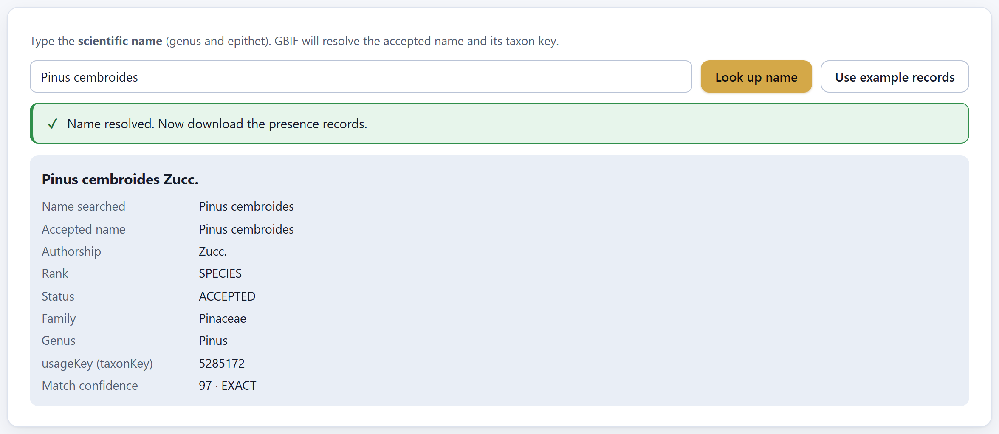
5285172 is what is sent to GBIF; the typed name only served to get there. The Use example records button, on the right, loads the 2,400 records that come with the program without going online.| What it says | How to read it |
|---|---|
| Accepted name | If it differs from what you typed, you typed a synonym. That is not an error: GBIF takes you to the valid name, and records published under the synonym are included. |
| Rank | SPECIES, SUBSPECIES, VARIETY… If you search for a subspecies, only its records will arrive; if you search for the species, you can include or exclude infraspecific taxa when downloading. |
| Status | ACCEPTED is what you want to see. SYNONYM or DOUBTFUL call for a taxonomic check before going on. |
| Match confidence | How sure GBIF is that it understood the name, with the type of match (EXACT, FUZZY…). A fuzzy match with low confidence is usually a misspelt name. |
Check the spelling and make sure it is the full scientific name (genus and epithet). Common names do not work: “Mexican pinyon” is not a scientific name and GBIF will not resolve it. If the name is recent and not yet in the GBIF taxonomy, use the name of the species it used to belong to and then filter by the written name in Block 2.
Once the name is resolved, the download card controls what is requested, from where and how much. All three decisions travel inside the query to GBIF: whatever is excluded here is not downloaded, and the total the app announces is already filtered.
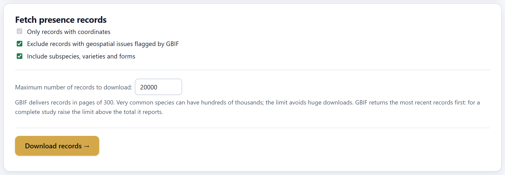
| Option | What it does and when to change it |
|---|---|
| Only records with coordinates | Discards those without a point. It is always on: a record without coordinates is of no use for modelling. |
| Exclude records with geospatial issues flagged by GBIF | Asks GBIF to exclude the records it has itself flagged with serious coordinate issues. It is a cheap first filter, but it does not replace Block 3. |
| Include subspecies, varieties and forms | Also fetches subspecies and varieties. Tick it if you want to model the whole species or compare its subtaxa; untick it if your question concerns only the species in the strict sense. |
| Countries | Requests only the records from the ticked countries (next subsection). It is the filter that shrinks the download the most. |
| Maximum number of records to download | The cap on the download. It saves you from waiting longer than necessary while you explore. |
Below the checkboxes is the country filter, which does not trim what has been downloaded: it asks GBIF, from the outset, for only the records from the countries you tick. The difference is large when the species is common: maize has 153,301 records with coordinates worldwide and 51,288 in Mexico. The count GBIF announces is already filtered, so you know from the start how many you are going to fetch.
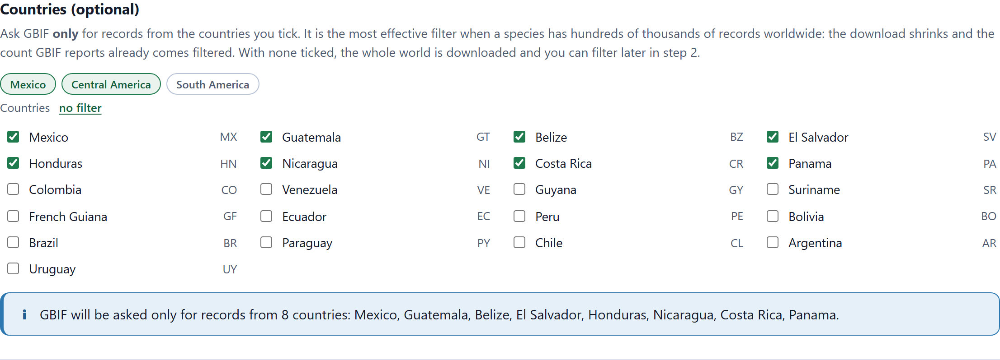
When the distribution crosses a border to a country outside the list. The Mexican pinyon of the example also grows in the south-western United States: filtering to Mexico would leave out 670 records and truncate the real niche, not just the map. The rule is the one in chapter 2: the study area is decided by biology, not by convenience.
GBIF delivers the most recent records first. If your species has 20,000 records and you set a cap of 2,000, you will not get 2,000 representative records: you will get the 2,000 newest, which are biased towards citizen science and towards areas with phones and signal. For a serious study, raise the cap above the total the search reports and let everything come down.
Once the download has finished, the last card summarises what there is and shows the first rows. This is the moment for the first check: how many records, from which countries, from which years.
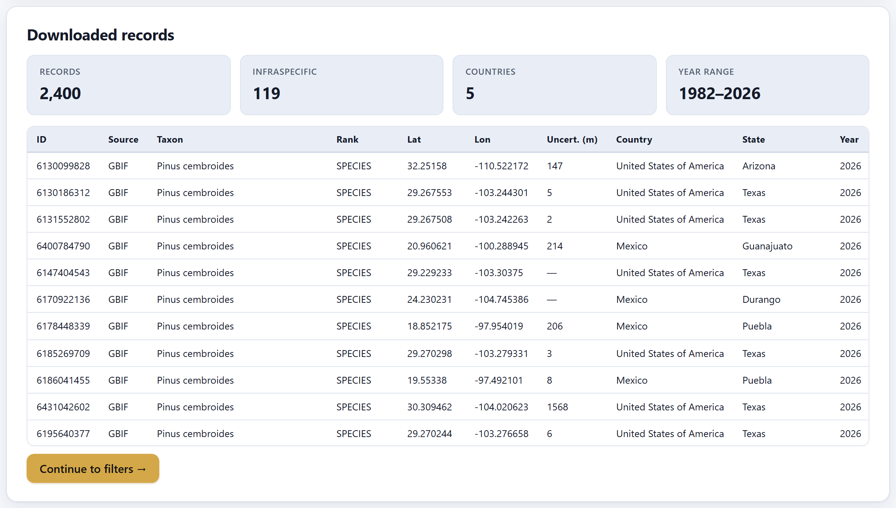
The 2,400 Mexican pinyon records that come with the program are distributed as follows: Mexico 1,719, United States 670, New Zealand 8, France 2 and Austria 1. There are seven named forms —the species, with 2,281 records, and six subspecies and varieties— and the dates run from 1982 to 2026. By kind of evidence: 1,343 human observations, 967 preserved specimens and 90 of other kinds.
The eleven European and New Zealand records are trees cultivated in botanic gardens and arboreta. They are legitimate as records —those trees exist— but they say nothing about where the species can live on its own. They will be removed in Block 2 or Block 3.
Not everything is in GBIF: data from your own sampling, from a thesis not yet published or from a local herbarium almost never are. The second card of the block accepts such data and treats them just like GBIF records.
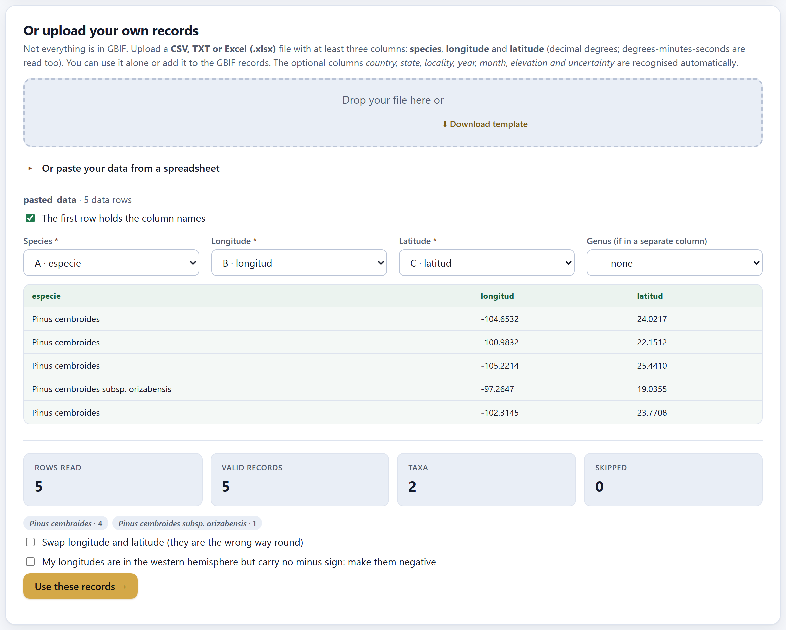
especie, longitud and latitud by itself; had it got them wrong, the three menus would let you correct the assignment..csv, .txt or .xlsx file onto the card, or copy the cells from your spreadsheet and paste them into the text box.| If your data look like this… | The app does this |
|---|---|
| Degrees, minutes and seconds 24° 01' 18" N, 104° 39' 12" W | Converts them to decimal degrees, with the sign that corresponds to the hemisphere. |
| Decimal comma −104,6532 | Reads it as the decimal separator. |
| Longitude and latitude swapped | Tick Swap longitude and latitude (they are the wrong way round) and they are all corrected at once. |
| Longitudes without the minus sign | The checkbox below makes them negative, which is the usual case in the Americas. |
| File saved on Windows with garbled accented letters | Recognises the old encoding and repairs the accents. |
The question always comes up, and the honest answer is: fewer than people think, if they are well spread. What a model needs is not a large number of points but points that cover the range of conditions in which the species lives. Fifty records spread across the whole mountain range teach more than five hundred crowded into two ravines.
| Fewer than 15 | Do not model with flexible algorithms. A simple envelope model and a description of the environment are more honest. |
| From 15 to 30 | Modelling is possible, with few variables (three or four), simple models and careful validation. Studies that have measured the effect of sample size find that this is where usable results begin. |
| More than 50 | Comfortable ground for the ten algorithms and the ensemble of Block 9. |
| Many thousands | The problem is no longer the number but bias: thinning to one presence per cell usually improves the model more than adding data. |
These are orders of magnitude from the literature, not official thresholds: the real minimum depends on how narrow the niche is and on how much environmental variation there is in your region.
| What you see | What happened and what to do |
|---|---|
| “Could not query GBIF” | No internet connection, or the service is not responding. The app works just the same with the bundled example or with your own files; try the download again later. |
| The download stops halfway “the connection to GBIF was lost” | In downloads of tens of thousands of records the connection may drop while a page is being read. The app retries up to six times with increasing waits and, if it still fails, offers a button to use the records that have already arrived instead of losing them. You can carry on working with that set or try the full download again later. |
| Far fewer records arrive than you expected | Check the cap and the checkboxes: Only records with coordinates discards many old herbarium records that were never georeferenced. |
| Countries appear where the species does not live | They are almost always cultivated specimens or coordinate errors. Do not delete them by hand: Block 2 filters them by country and Block 3 detects them by rules, so there is a record of how many there were. |
| All the records are from the last five years | The cap was too low and GBIF delivered only the most recent ones. Raise it. |
| Your file loads, but “valid records” is much lower than “rows read” | Wrongly assigned columns, coordinates containing text (“s/d”, “—”) or empty cells. Correct the assignment or clean the sheet and load it again. |
| The points end up in the Indian Ocean | Longitude and latitude swapped, or longitudes without a sign. The two checkboxes at the bottom of the card fix it. |
Download the raw CSV if you are going to work over several days: that way you do not depend on GBIF delivering exactly the same records next time. The downloaded records are also listed in the final report, with their date and query.
This is where the study area is decided, together with the records that represent it. It is the block with the greatest influence on the final model, and the one that usually gets the least attention.
A filter looks like a matter of convenience —removing whatever gets in the way— but in niche modelling it is a substantive decision. The records you keep define which environments count as “occupied”, and the territory they span defines where the “available” environment they are compared against comes from. Changing the study area changes the model, even when the algorithms and the variables stay the same.
In the introduction we saw the BAM diagram: M is the part of the world the species has been able to reach during its history. A model should learn by comparing the occupied sites against that M, not against a whole continent. If the area is too large, the model faces a trivial task —telling the Mexican sierras apart from the Amazon rainforest— and its quality measures come out inflated. If it is too small, the model never sees the conditions the species avoids and learns nothing. A reasonable M is usually the biogeographic region where the species lives, plus a margin.
The first card shows four groups of checkboxes with the number of records in each category. Changes take effect at once: every click recalculates the number on the result card.
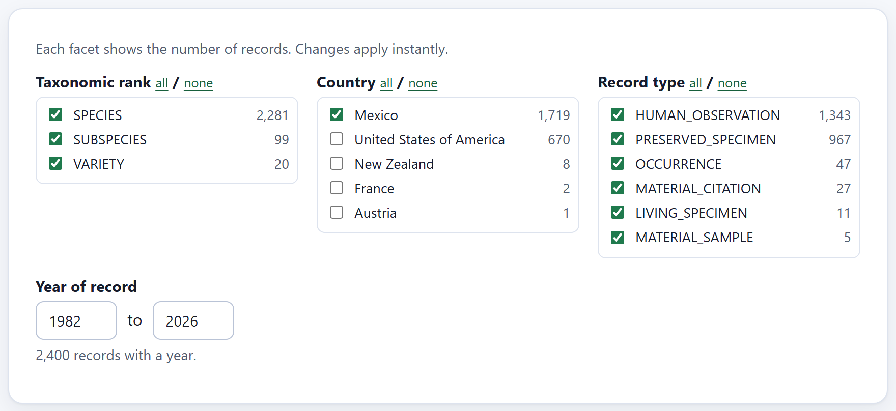
| Facet | What it is really for |
|---|---|
| Taxonomic rank | Separating the species from its subspecies and varieties. If you are going to model the whole species, keep them all; if your question is about one infraspecific taxon, keep only that one —and check that it has enough records (section 1.7). It is also useful for comparisons: model each subspecies separately and see whether they occupy different environments. |
| Country | The quickest way to remove specimens cultivated on other continents and to confine the study to one country. If you already knew which countries you would work with, it is better to filter them in the download itself (section 1.4): here you filter what has arrived, there you avoid bringing it in. Beware: if your species crosses a border —as the Mexican pinyon does between Mexico and the United States— removing the neighbouring country truncates the real niche, not just the map. |
| Record type | LIVING_SPECIMEN are living plants in collections: botanic gardens and arboreta. They almost always have to go. PRESERVED_SPECIMEN are herbarium specimens, whose identification can be checked but whose georeferencing is sometimes coarse; HUMAN_OBSERVATION are observations, with a precise coordinate but variable identification. |
| Year | Discarding old records whose site may have changed its land use, or keeping a period that matches the climate of your layers. If you use WorldClim 2.1, the climate represents 1970–2000: mixing it with records from 1900 is comparing different things. |
Many studies are regional rather than national: a mountain range, a state, a watershed. The program comes with the 32 states of Mexico and their boundaries built in, and it can assign each record the state it belongs to.
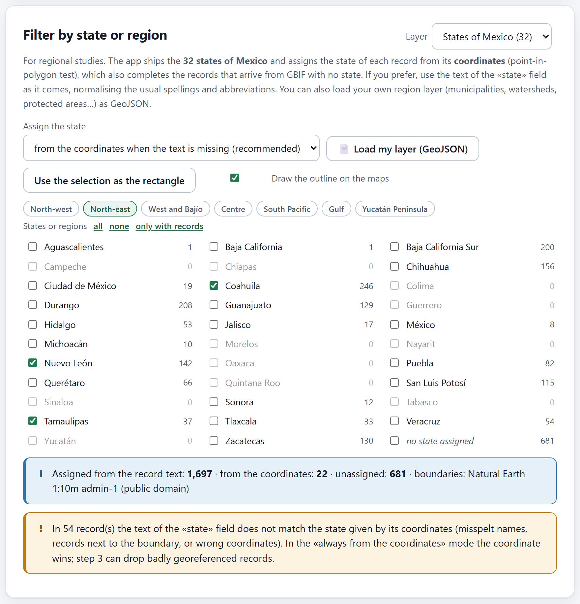
GBIF supplies a text field with the state, but many records arrive without it and others carry it misspelt. That is why there are three modes:
| Mode | What it does |
|---|---|
| from the coordinates when the text is missing (recommended) | Uses the record’s text when there is one, normalising spellings and abbreviations (“Edo. de México”, “Mexico”, “Michoacan” → the same state), and when there is none it decides from the coordinate. It is the mode that makes use of the most records. |
| always from the coordinates | Ignores the text and relies only on the point-in-polygon test. Useful when you suspect the text field is unreliable. |
| from the record text only | Keeps whatever the publisher wrote. It is for auditing the data, not for modelling. |
With the 2,400 records of the Mexican pinyon: 1,697 got their state from the record text, 22 got it from their coordinates —Mexican records that GBIF delivered with no state— and 681 remained unassigned, which are exactly the 670 from the United States and the 11 from Europe and New Zealand: there is not a single Mexican record without a state.
The states with the most records are Coahuila (246), Durango (208), Baja California Sur (200), Chihuahua (156), Nuevo León (142) and Zacatecas (130): the Sierra Madre Occidental, the Sierra Madre Oriental and the Sierra de La Laguna, which is where the Mexican pinyon lives.
In the example there are 54 records whose written state is not the state their coordinate falls in. There are three causes: misspelt names or municipalities taken for states, records right on the boundary between two states —where an error of 200 m changes the answer— and plainly wrong coordinates. The app warns you and does not decide for you: in the recommended mode the text wins, in the coordinate mode the coordinate wins, and badly georeferenced records are dealt with in Block 3.
The 32 states come from Natural Earth at a scale of 1:10 million, which is in the public domain, simplified to keep them light. They are accurate enough to classify records and to draw outlines on a page-sized map, but they are not an official boundary: do not use them to measure areas or to settle a boundary dispute.
When the region you are interested in does not match any state —an elevation belt, a rectangular study zone, the area of a project— there is the clip by coordinates.
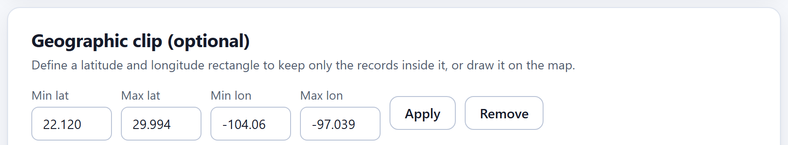
The bounding box and the state filter can be used together: the box clips and the state selection refines. If you are going to model, the box should be somewhat larger than the known distribution, so that the model also sees conditions the species does not occupy.
The last card states how many records survived and shows the table with the State column already filled in. This is the set that goes on to Block 3.
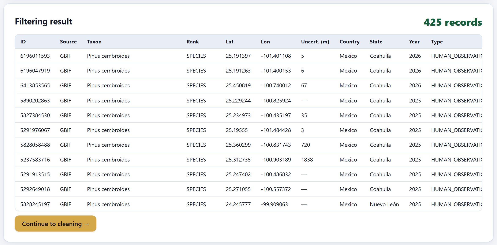
There is no single rule, but there is a sequence of questions that works:
| What you see | What happened and what to do |
|---|---|
| The count does not drop when you tick a box | The facet counts refer to the downloaded set. If you had already filtered by another facet, the number on the result card does drop, but the one next to the box does not change. |
| Many records with “no state assigned” | Normal if your download includes other countries: no Mexican state applies to them. If they are Mexican, check the assignment mode: with from the record text only, every record GBIF delivered without that field is left out. |
| A state with records you did not expect | It may be a little-known real population, a cultivated specimen or a wrong coordinate. Look at it on the Block 4 map before deciding. |
| The bounding box leaves out records you wanted | Remember that longitude is negative in the Americas: a box from −104 to −97 does not include −110. The Use the selection as the rectangle button saves you from typing the numbers by hand. |
| Your GeoJSON loads but the list is empty | The polygons carry no recognisable name in their properties, or the file is in a projection other than latitude–longitude. Save it in geographic coordinates (EPSG:4326). |
| Fewer than fifteen records remain | The area is too small for modelling. Enlarge it, or lower the goal to describing the environment of the points (Blocks 5 and 7) without fitting a model. |
Nine rules that look for the typical errors of a biodiversity database, each with its count before it is applied, and a before-and-after report. None of them removes anything unless you decide so.
Biodiversity databases accumulate two centuries of work done with very different means: handwritten labels, localities written from memory, georeferencing done afterwards from a text, hurried digitisation. The resulting errors are not random: they recur in the same forms, and that is why they can be searched for with rules.
What is at stake is not how the map looks. A record bearing the coordinates of the centre of the country brings into the model a climate the species never occupied; fifty duplicate records of the same tree tell the algorithm that this climate is fifty times more important than the rest; a specimen grown in a European garden widens the niche until it becomes unrecognisable.
A presence-only model learns from the contrast between where there are records and what the environment is like in general. If a site appears fifty times —because fifty people photographed the same tree next to the viewpoint— the model takes that environment to be fifty times more common than it is. Removing duplicates is not cosmetic tidying: it stops sampling effort from passing itself off as ecological preference.
Each rule is switched on or off separately and shows how many records it would flag before you apply anything. That live count is the useful part: seeing that a rule flags 400 records forces you to understand why before you delete them.
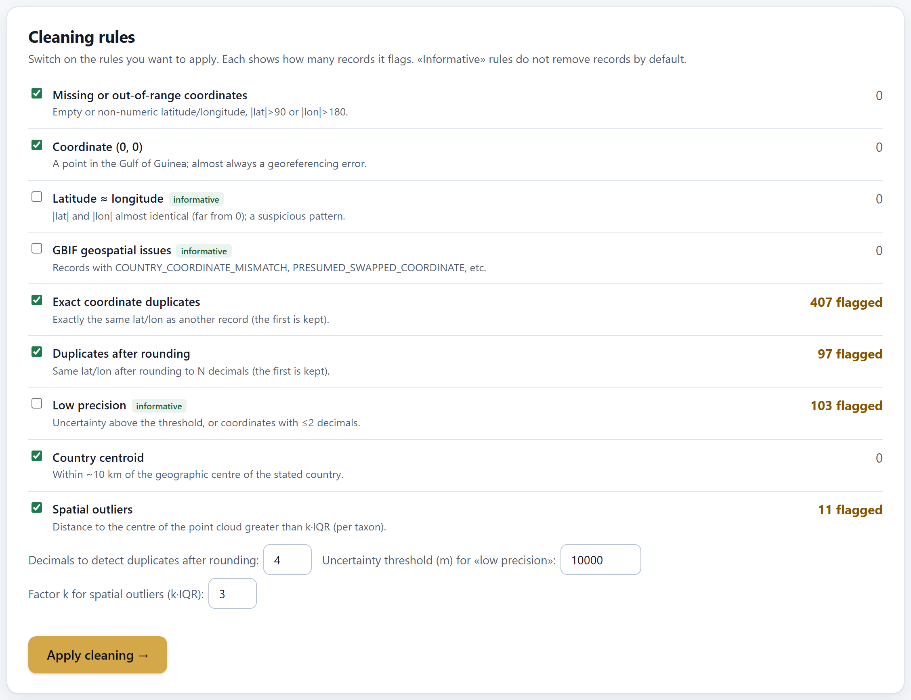
| Rule | What it looks for and when to switch it off |
|---|---|
| Missing or out-of-range coordinates | Latitude or longitude empty, containing text, or impossible (|lat| > 90, |lon| > 180). There is no reason to switch it off. |
| Coordinate (0, 0) | The “null island” in the Gulf of Guinea, which appears when a program writes zeros instead of leaving the field empty. |
| Latitude ≈ longitude | Both values almost identical and far from zero: the pattern left by copying one cell over the other. Since it can genuinely occur along a diagonal band of the planet, the app treats it as informative. |
| GBIF geospatial issues | GBIF’s own flags: country not matching the coordinate, presumably swapped coordinate, and others. Informative, because some flags are harmless. |
| Exact coordinate duplicates | Records with the same latitude and longitude, down to the last decimal. The first is kept. It is usually the rule that removes the most records. |
| Duplicates after rounding | Records that coincide after rounding to N decimals: the same tree recorded with different precisions. With 4 decimals, “the same site” means about 11 m. |
| Low precision | Declared uncertainty above the threshold, or coordinates with two decimals or fewer —which already amounts to more than a kilometre. Informative, because its threshold depends on the resolution of your layers. |
| Country centroid | Points within about 10 km of the geographic centre of the stated country: the classic mark of a record georeferenced “at country level”. |
| Spatial outliers | Records whose distance to the centre of the point cloud exceeds k times the interquartile range, computed per taxon. It detects whatever lies far from where everything else is. |
| Parameter | What it changes |
|---|---|
| Decimals to detect duplicates after rounding default 4 | Defines how close counts as “the same site”: 4 decimals ≈ 11 m, 3 ≈ 110 m, 2 ≈ 1.1 km. With 1 km layers it makes sense to go down to 2; with 18 km layers, like those of the example, the thinning by cell in Block 9 does that job better. |
| Uncertainty threshold default 10,000 m | The declared uncertainty above which a record is considered low precision. A sensible rule: the threshold should not be larger than the cell size of your layers. |
| Factor k for outliers default 3 | How many interquartile ranges of distance are tolerated. Lowering it to 1.5 flags many more records —and starts flagging real populations—; raising it to 5 lets almost everything through. |
Three rules come switched off on purpose. It is not that they matter less: it is that the decision depends on your study. A record with 5 km of uncertainty is useless for a 1 km model and perfectly usable for an 18 km one. The app tells you how many there are and you decide.
A spatial outlier may be an error… or the most interesting disjunct population in your study. Before applying the rule, go to the Block 4 map and look at where the flagged points are. If they are real populations, switch the rule off and remove by hand the records that really are errors. The manual insists: the rules propose, the researcher disposes.
When you press Apply cleaning → the report appears: how many records entered, how many remained, how many left and through which rule.
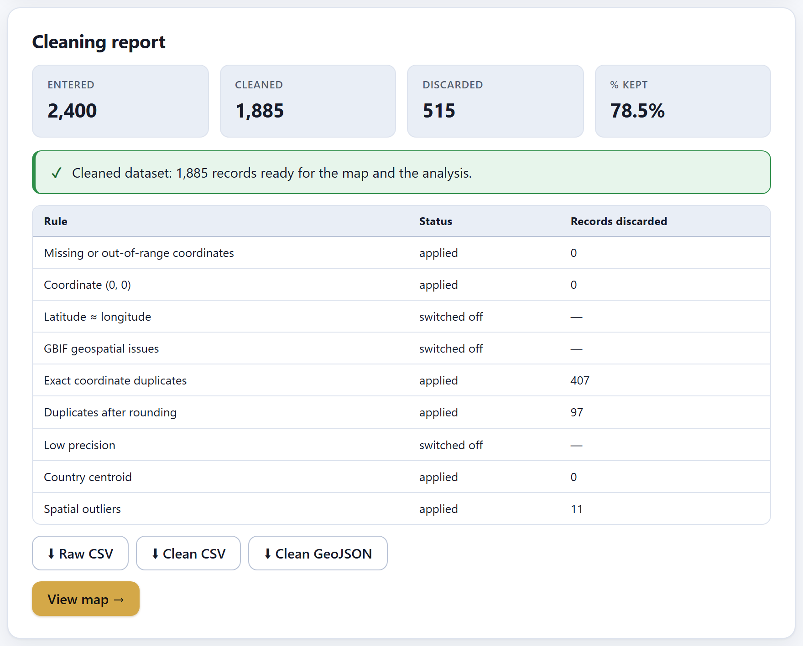
With the default rules, the 2,400 records of the Mexican pinyon come down to 1,885 (78.5% kept). The 515 that go are: 407 exact coordinate duplicates, 97 duplicates after rounding to four decimals and 11 spatial outliers. The other rules flagged nothing: there are no impossible coordinates, no (0, 0) and no country centroids.
The informative rules also pointed out 103 low-precision records, which were kept. With 18 km cells they do no harm; with 1 km layers it would be worth reviewing them.
It is worth seeing who the 11 records removed by the outlier rule are, because they explain what it is for:
The fact that the rule works per taxon is what makes the second finding possible: (23, −102) lies within the range of the species, but very far from that of its subspecies.
| File | What it is for |
|---|---|
| ⬇ Raw CSV | Everything downloaded, neither filtered nor cleaned. It is your backup: keep it together with the date of the query. |
| ⬇ Clean CSV | The set the following blocks will work with. It is what goes into the supplementary material of a paper. |
| ⬇ Clean GeoJSON | The same points as a geographic layer, to open them in a mapping program. |
| What you see | What happened and what to do |
|---|---|
| More than half of the records go | They are almost always exact duplicates, and that is almost always fine. Check the report table: if most of them left as duplicates, your set had many observations of the same site. |
| The outlier rule flags populations you know to be real | Raise the factor k, or switch the rule off and remove by hand whatever really is an error. With species of disjunct distribution —those of isolated mountain ranges— it is always worth reviewing it. |
| All the counts are zero | Your data were already clean, or you are cleaning a small set of your own. It is not an error. |
| Fewer records remain than you need | Go back to Block 2 and enlarge the area or the period before lowering the demands of the cleaning. |
| I want to know which ones left | Download the raw and the clean CSV and compare them by record identifier: the difference is the discarded records. |
One sentence is enough, and with these data it writes itself: “Of the 2,400 records downloaded from GBIF, 407 exact coordinate duplicates, 97 duplicates at four decimals and 11 spatial outliers (k = 3, per taxon) were removed, giving a final set of 1,885 records”.
The first map serves two quite different purposes: checking the data by eye, and producing the figure that will end up in the paper. The map studio does both, and exports at whatever resolution and in whatever format the journal asks for.
No automatic rule sees what a trained eye sees in thirty seconds of looking at a map. Before extracting a single environmental variable, it pays to look at the points and ask yourself five questions.
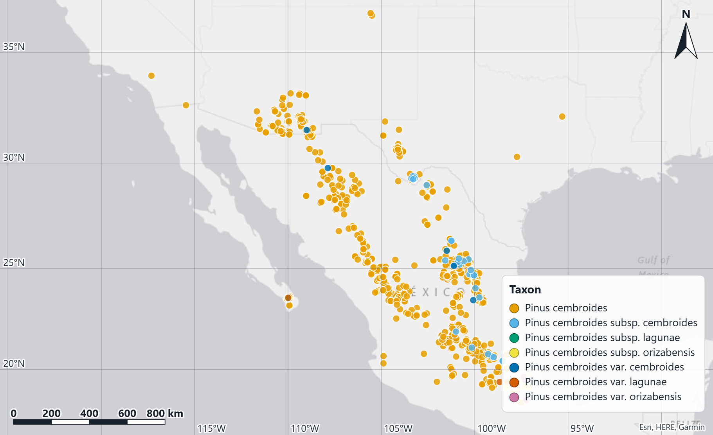
The map plots the records that survived Block 3, coloured by the criterion you choose: by taxon, by record type or in a single colour. On top of it you can switch on the cartographic elements (legend, scale bar, north arrow, grid) and the outline of the region you chose in Block 2.
The background tiles are downloaded from an online service. Without a connection, the map shows the points over a plain background, which is still perfectly usable, and the scale bar and the coordinates keep working. If a base map does not respond, the app switches to another one by itself.
Below the map sits the map studio, folded away until you need it. Its seven tabs cover everything that separates a map on screen from a publishable figure.
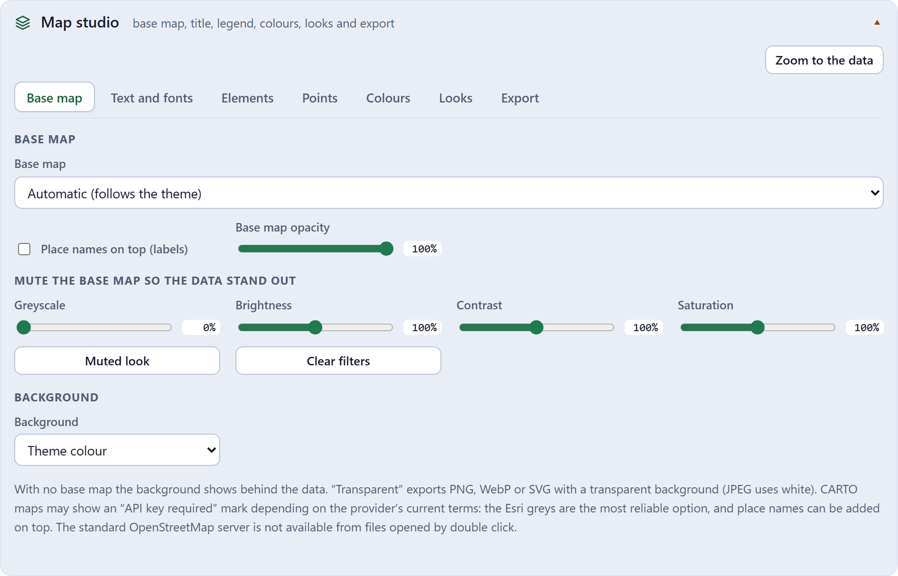
| Tab | What it controls |
|---|---|
| Base map | The background: greys, streets, topographic, terrain, imagery or none; its opacity and how far it is toned down in greyscale, brightness, contrast and saturation. The Muted look button makes the background discreet with a single click. |
| Text and fonts | Title, subtitle and credit, and the typeface of each element separately: the title, the legend labels, the scale bar numbers, the grid coordinates and the north arrow letter, each with its own size, bold, italic and colour. |
| Elements | What is drawn: legend (inside or outside the map, in one or several columns), scale bar, north arrow, coordinate grid and frame. |
| Points | Shape, size, outline and transparency of the symbols, and the heat map for when the points pile up. |
| Colours | The palette for the taxa or the groups, and the colour ramps for the continuous maps of Block 9. |
| Looks | Ready-made presets, and the option of saving your own look as a file to reuse it in another figure or another study. |
| Export | Framing, size, resolution, format, clip and preview: section 4.4. |
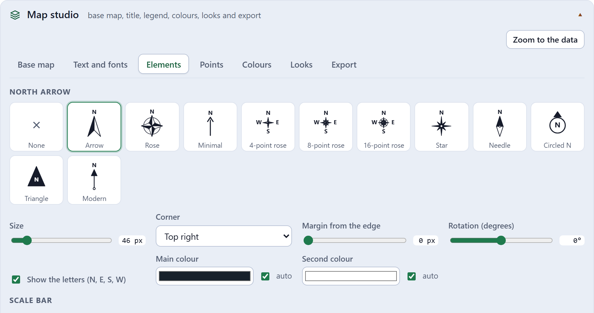
The Export tab answers the three questions any journal asks: what is shown, at what size and in what format.
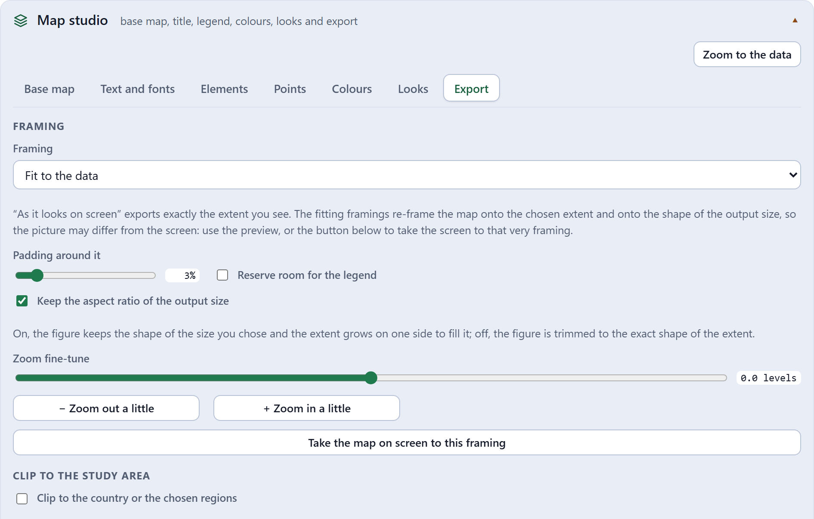
| Control | Options and what they are for |
|---|---|
| Framing | As it looks on screen, Fit to the data, Fit to the chosen states or regions, The whole of Mexico and Manual extent with its four coordinates. The padding and the zoom fine-tune refine the result without touching the map on screen. |
| Size | As shown, A4 landscape or portrait, single or double journal column (85 and 180 mm), a 16:9 slide, square, or a custom size typed in millimetres. |
| Resolution | A multiplier for the on-screen size, or 150, 300 and 600 dpi when the size is in millimetres. Most journals ask for 300 dpi for halftone figures and 600 for line art. |
| Format | PNG (lossless, supports a transparent background), JPEG, WebP, TIFF, georeferenced GeoTIFF and SVG (vector, with the data and the text, but without the base map). |
PNG for a document or a presentation. TIFF when the journal requires it or when you are going to keep editing the map in a design program. GeoTIFF if you want to open the image in a mapping program and have it land in its place on the globe: it carries the coordinates and the reference system inside. SVG when you want to change the text or the colours later without losing sharpness; since it does not include the base map, it is mainly useful for figures of points on a plain background.
Two features spare you the back-and-forth of exporting, looking at the file, correcting and exporting again.
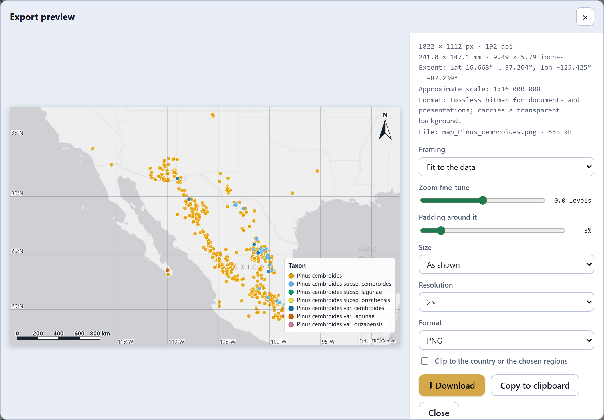
The clip to the study area leaves out of the image everything that is not the country or the regions chosen in Block 2: the background tiles, the suitability surfaces and the points outside disappear, leaving only the silhouette of the territory, with its outline drawn and the outside transparent or in the colour you choose. It is the way to deliver a map of Mexico (or of a single state) without the neighbouring country peeking in.
| Element | Why |
|---|---|
| Scale bar | Without it no distance can be judged. A bar is better than a “1:16,000,000” text: the bar remains valid if the figure is reduced. |
| North arrow | Essential when the map is not oriented with north at the top, and good practice always. |
| Coordinates | The grid with its degrees lets readers locate any point and compare with other maps. |
| Legend | What each colour and each symbol means, with the scientific names in italics. |
| Base map credit | Tile providers require attribution; the app writes it in the corner by itself and it is exported with the image. The figure caption should also give the source of the records, how many there are and their date. |
| What you see | What happened and what to do |
|---|---|
| The map shows the whole world | It was drawn before its space had a size. Press Zoom to the data, in the corner of the studio. |
| The background is grey, has no detail or carries a watermark | There is no connection, the provider did not respond, or it adds its mark under its terms of use. Switch base map (the greys are the most reliable) or use None (background colour): for a figure of points, a plain background is usually enough. |
| The image does not match the screen | The framing is not As it looks on screen. Open the preview, or use Take the map on screen to this framing. |
| The lettering comes out tiny in the figure | When exporting to a paper size, the text is sized with the figure. Increase the font size of each element in Text and fonts and check the preview again. |
| The points pile up and nothing can be made out | Reduce the symbol size, increase its transparency, or switch to a heat map in the Points tab. |
Here the points stop being coordinates and become a table of conditions: nineteen bioclimatic variables, elevation, the climate type and, if you ask for it, the soil. That table is the raw material for everything that follows.
The nineteen bioclimatic variables are not raw data: they are summaries calculated from the monthly series of temperature and rainfall, designed to make biological sense. They do not tell you how much it rained on a given day, but how much rain falls in the driest quarter, or how far the temperature drops in the coldest month: the things that limit a plant.
| Code | What it measures | Unit |
|---|---|---|
| BIO1 | Annual mean temperature | °C |
| BIO2 | Mean diurnal temperature range | °C |
| BIO3 | Isothermality (BIO2 / BIO7 × 100) | % |
| BIO4 | Temperature seasonality (standard deviation × 100) | °C×100 |
| BIO5 | Max temperature of warmest month | °C |
| BIO6 | Min temperature of coldest month | °C |
| BIO7 | Temperature annual range (BIO5 − BIO6) | °C |
| BIO8 | Mean temperature of wettest quarter | °C |
| BIO9 | Mean temperature of driest quarter | °C |
| BIO10 | Mean temperature of warmest quarter | °C |
| BIO11 | Mean temperature of coldest quarter | °C |
| BIO12 | Annual precipitation | mm |
| BIO13 | Precipitation of wettest month | mm |
| BIO14 | Precipitation of driest month | mm |
| BIO15 | Precipitation seasonality (coefficient of variation) | % |
| BIO16 | Precipitation of wettest quarter | mm |
| BIO17 | Precipitation of driest quarter | mm |
| BIO18 | Precipitation of warmest quarter | mm |
| BIO19 | Precipitation of coldest quarter | mm |
| ELEV | Elevation above sea level | m |
All nineteen come from the same twelve monthly temperatures and the same twelve monthly rainfall totals. BIO1 and BIO11, or BIO12 and BIO16, measure almost the same thing over most of the world. Putting them all into a model adds no new information and does cause collinearity: that is why Block 6 exists, to decide which ones to keep.
The app neither downloads layers nor carries them inside: the WorldClim layers cannot be redistributed without permission, so the program ships with none of them. You download them once (datos/LEE-ME.md) and the app reads them from your disk. Köppen-Geiger, on the other hand, is included.
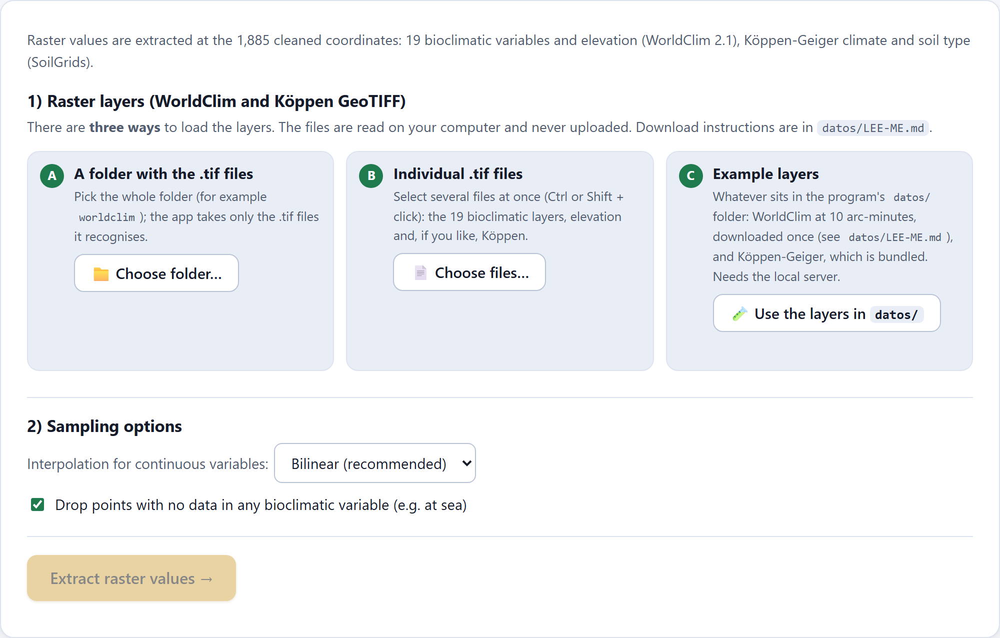
| Way | When it suits you |
|---|---|
| 📁 Choose folder… | You have the WorldClim folder unzipped. You pick the whole folder and the app takes from it only the files it recognises. It is the most convenient option for a real study. |
| 📄 Choose files… | Your layers are scattered or you want to load only some of them. Select several at once with Ctrl or Shift. |
🧪 Use the layers in datos/ | Reads the program’s datos/ folder, which is the best place to put the layers when you download them. It needs the local server. |
The app identifies the layers by their file name, following the WorldClim pattern: wc2.1_res_bio_1.tif … bio_19.tif and elev.tif. If your files have different names, simply rename them to that pattern. Appendix A sets out the full rules.
For each record and each layer, the app converts the coordinate into a row and a column of the grid and reads the value. Two details matter:
When a point falls in a cell with no data (the sea, or outside the extent of your layers) the variable is left empty. The Drop points with no data in any bioclimatic variable checkbox, ticked by default, leaves them out of the table; if you untick it, they are kept with gaps and each analysis will decide what to do with them.
Two categorical variables complete the picture. The Köppen-Geiger classification sums up the climate in a label (cold steppe arid, temperate with dry winter…) that is understood at once and is widely used in descriptive ecology. It is just another layer, in a small file, and it is loaded like the rest.
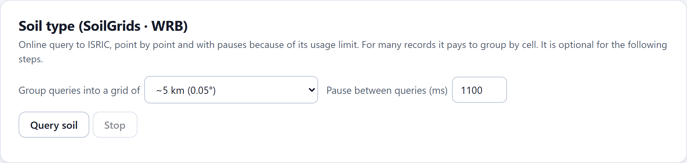
The public soil service limits how many queries per second it accepts, so the app asks slowly: with hundreds of points the query can take several minutes, and it can be stopped and resumed. For a model with many records, first decide whether soil is really needed: in most climatic niche studies it is not.
The extraction produces the table that feeds everything else: one row per record, one column per variable.
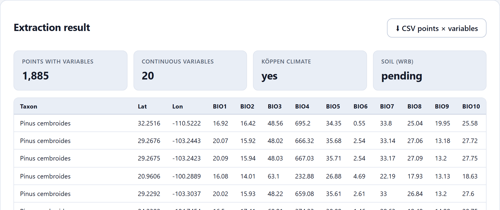
With the 1,885 cleaned records of the example, the central half of the points (from the first to the third quartile) lives like this:
And by climate type: 1,272 records in cold steppe arid climate (BSk), 227 in temperate with dry winter and warm summer (Cwb), 186 in hot steppe arid (BSh), 95 in hot desert arid (BWh) and 71 in temperate with no dry season (Cfb). The portrait is that of a pine of cool, semi-arid mountains.
The last card colours the points by the value of the variable you choose. It is the quickest way to see whether a variable has geographic structure, and whether the gradient it shows makes sense.
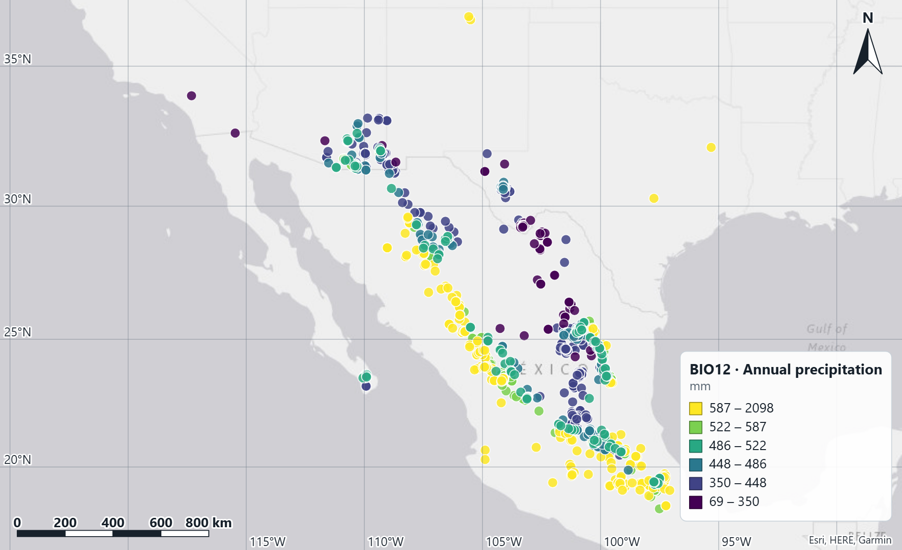
Before moving on, look at the minimum and maximum values of two or three variables. It is a free quality check: the environment exposes records that geography could not.
None of the three had been flagged by the geographic rules of Block 3, because they lie within the general distribution area. They show up when you look at the environment. They can be removed by going back to Block 2 with a filter, or kept with the decision noted down.
| Resolution | Cell | When |
|---|---|---|
| 30 seconds | ≈ 1 km | Local or mountain studies, where relief changes the climate within a few kilometres. The files are huge: it pays to crop them first. |
| 2.5 minutes | ≈ 4.6 km | The sensible middle ground for a state-wide or regional study. |
| 5 minutes | ≈ 9 km | National studies with records of uneven precision. |
| 10 minutes | ≈ 18 km | Continental studies and teaching: it is the one used in the examples in this manual. |
The rule of thumb: the cell should not be finer than the precision of your coordinates. With records georeferenced to 5 km, a 1 km layer gives a false sense of detail.
| What you see | What happened and what to do |
|---|---|
| “… files read, none recognised as WorldClim or Köppen” | The file names do not follow the expected pattern, or you chose a folder that does not contain the .tif files. Rename them or go into the right subfolder. |
| Many points with no data | Your layers do not cover the whole area of the records (the typical case of a cropped layer) or the points fall in the sea. Compare the extent of the layers with that of your data. |
| The extraction takes a long time | Normal with 30-second layers and thousands of points: 20 large files are being read. The progress bar advances layer by layer. |
| The temperature values look multiplied | Some older distributions store temperature in tenths of a degree. If BIO1 comes out as 162 instead of 16.2, your layers are of that kind. |
| The soil query stops halfway | The service throttled the queries. Press the button again: it carries on where it stopped and keeps what has already been queried. |
| Köppen comes out empty | The Köppen-Geiger layer is missing (it is a separate file) or it was left out of the file selection. |
| The button to continue to Block 6 warns you instead of moving on | You have not yet pressed Extract raster values →. The correlation is computed on that table, so it has to be created first; once the extraction is finished, Blocks 7, 9 and 10 become available too (Block 8 opens after the statistics of Block 7). |
The nineteen bioclimatic variables often say the same thing. This block shows how much they overlap, computes the VIF live and proposes a handful of variables with little redundancy, without taking away the ones you consider essential.
Two variables are collinear when one can be predicted well from the other. In climate data this is the rule, not the exception: where it is hotter the rainfall tends to differ, and as elevation rises temperature falls. The problem is not that collinearity exists, but what it causes when it is ignored.
| What it breaks | How it shows |
|---|---|
| Variable importance | If BIO5 and BIO10 measure almost the same thing, the model shares the credit between them and neither looks important. With only one of them, that variable comes out as decisive. The ecological conclusion changes although the data do not. |
| The coefficients | In linear models (GLM, GAM) the coefficients become unstable: they change sign and size when a handful of records is removed. Tree-based models tolerate it better, but their importance measure still suffers. |
| Projection to another climate | This is the most serious damage and the least visible. A model fitted with two correlated variables learns the relationship between them as it is today; if that relationship changes in the future scenario, the model extrapolates over combinations it has never seen. |
The matrix shows the correlation between every pair of variables, computed from the values extracted at your records, not from the climate of the whole country: what matters is how they relate where your species lives.
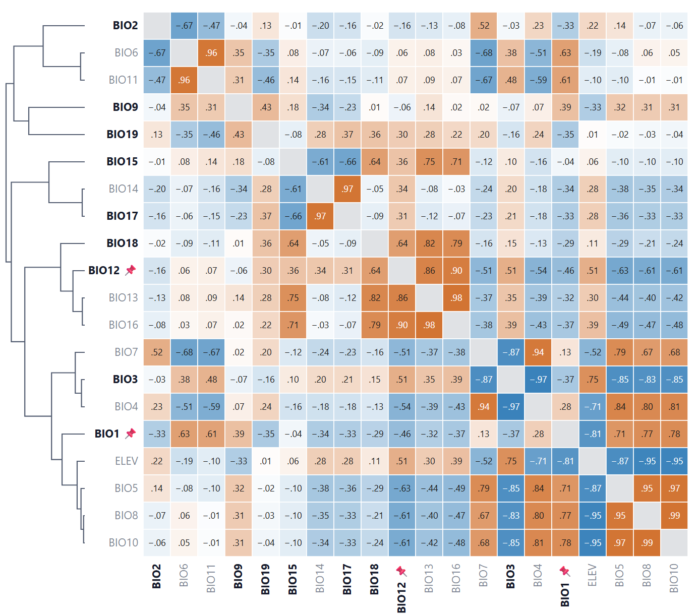
Correlation looks at pairs; the VIF looks at sets. Each variable is regressed on all the others in the set and VIF = 1 / (1 − R²) is computed. If the others explain 90% of its variation, the VIF is 10. A high VIF means that the variable is almost a combination of the others, even if it has no high pairwise correlation: that is the case the matrix alone cannot detect.
The thresholds 5 and 10 are widely used reading conventions, not laws: below 5 collinearity is low; between 5 and 10, moderate; above 10, high.
In the variables table, the VIF and the maximum correlation are recomputed with the variables you have ticked every time you tick or untick one. You see the effect of each decision at once, and the Status column says why each variable was dropped: because of a high pairwise correlation or because of its VIF.
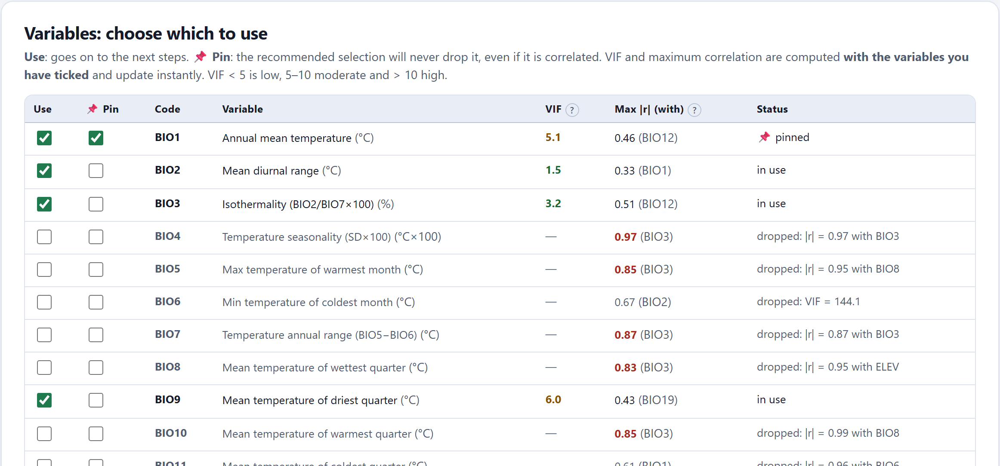
The ✨ Recommended selection button applies a simple, transparent procedure: first it removes the variables above the correlation threshold, keeping from each pair the one that carries more information about the rest; then, on what is left, it removes one at a time the variables above the VIF threshold, recomputing each time. Pinned variables are never touched.
Both thresholds are yours: |r| defaults to 0.8 and the VIF to 10, the conventions most used in the niche modelling literature. Lowering them leaves fewer, more independent variables; raising them does the opposite.
An automatic procedure knows no ecology. If your species is limited by frost, BIO6 has to be in the model even if the algorithm prefers another variable; if you are going to discuss mean temperature and annual rainfall, BIO1 and BIO12 cannot be missing. That is what the pin is for: pinning a variable makes it untouchable.
With the 1,885 records of the Mexican pinyon and the default thresholds (|r| > 0.8, VIF > 10), the automatic selection keeps eight variables: BIO2, BIO3, BIO9, BIO16, BIO17, BIO18, BIO19 and elevation, with a maximum |r| of 0.79 and a maximum VIF of 6.1. Neither BIO1 nor BIO12 survives: the procedure preferred their relatives.
Pressing 📌 Pin BIO1 and BIO12 and recompute turns the selection into nine variables (BIO1, BIO2, BIO3, BIO9, BIO12, BIO15, BIO17, BIO18 and BIO19) with a maximum |r| of 0.66 and a maximum VIF of 8.7. In other words, requiring the two classic variables lowered the maximum correlation of the set, at the cost of one more variable and a somewhat higher VIF. A better result, and an interpretable one too.
The selection made in this block is the one Blocks 7, 8 and 9 use by default; in Blocks 8 and 9 the Those of step 6 button brings it back. If you change your mind later, come back here and recompute; do not leave two different selections in the same piece of work.
The last card lists the pairs above the threshold, from the most to the least correlated, and lets you open any of them to see the point cloud.
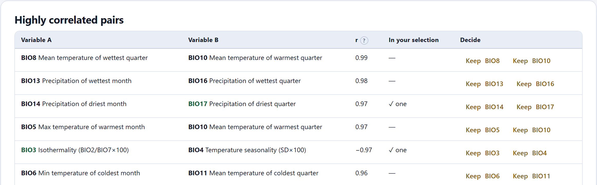
| They make sense | Every variable in the model should be justifiable in one sentence of the discussion: why that one, and not another, limits your species. |
| They do not repeat each other | |r| below 0.8 among all of them and VIF below 10; if you can go down to 0.7 and 5 without losing meaningful variables, so much the better. |
| There are not too many | With few presences, a model with many variables learns the data by heart. A prudent guide is no more than one variable per ten presences. |
Five to ten well-chosen variables are enough for almost any niche study; nineteen are never needed.
| What you see | What happened and what to do |
|---|---|
| The matrix is empty | There is no variables table: go back to Block 5 and extract the raster values. |
| A huge VIF, in the hundreds | It is normal with all nineteen bioclimatic variables together; it means that the variable is almost an exact combination of others. Apply the recommended selection. |
| The selection leaves out “my” variable | Pin it and recompute. That is exactly what pinning is for. |
| Pearson and Spearman give very different results | The relationship between those variables is not linear. Open it in the pair viewer before deciding. |
| Very few variables are left | Raise the thresholds a little, or pin the ones you need. Three ecologically meaningful variables model better than ten redundant ones. |
| I changed the selection and the results of another block did not change | Blocks 7, 8 and 9 take the selection when you enter them, or, in 8 and 9, when you press Those of step 6. Go back to that block and reload the selection. |
Before modelling you need to know what the data look like: the range in which the species lives, whether the distributions have one mode or two, whether a transformation is needed. Every figure is drawn as vectors and can be edited down to the last detail.
This block fits no model: it describes. And yet it is the one that most often changes the course of a study, because it is where you discover that a variable has two modes, that another is dominated by a handful of extreme values, or that the temperature range the species occupies is narrower than was thought.
It is also the first block that uses the computing engine: when you press Run statistical analysis → the app loads Python inside the browser. The first time takes a while; after that it is immediate.
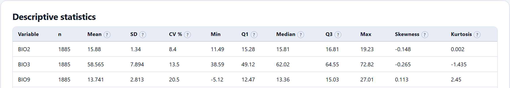
| Measure | How to read it |
|---|---|
| Mean and median | If they are close, the distribution is symmetric; if the mean is much larger, there is a long tail to the right. To describe the environment of a species, the median is usually the more honest of the two. |
| Standard deviation | The spread in the units of the variable. It is the one to report alongside the mean. |
| Coefficient of variation | The relative spread, as a percentage. Careful: it only makes sense on scales with an absolute zero, such as rainfall or elevation. For temperatures in degrees Celsius the zero is arbitrary and the CV means nothing: the same data in kelvin give a different number. |
| Quartiles | Q1 and Q3 enclose the middle half of the data. It is the interval worth quoting when describing the environment of a species. |
| Skewness | Zero is symmetric; positive, a tail to the right. Values between −0.5 and 0.5 are considered roughly symmetric, and above 1 in absolute value, strongly skewed: this is a reading convention, not a test. |
| Kurtosis | The weight of the tails relative to a normal distribution (0 = normal). There is no accepted scale of “high” or “low”: it is used to compare variables with one another, not against a threshold. |
Of the eight variables that Block 6 selected for the Mexican pinyon: the diurnal temperature range (BIO2) has a mean of 15.9 °C and a standard deviation of 1.3, with almost no skewness; isothermality (BIO3) has a mean of 58.6% and a kurtosis of −1.44, the sign of a flattened distribution with two groups; the mean temperature of the driest quarter (BIO9) has a kurtosis of +2.45, that is, heavy tails: a few very cold and very warm sites.
The histogram grid shows all the variables at a glance, each with its density curve. It is the figure that answers the question no table can: what shape does the distribution have?
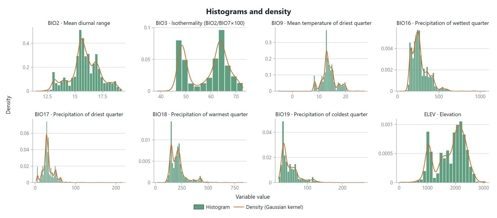
When you choose a variable, the app draws five figures of it: a histogram with the fitted normal, a box plot, a violin plot, a Q–Q plot and the empirical cumulative distribution.
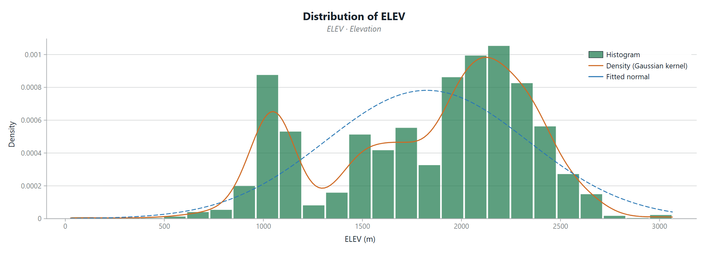
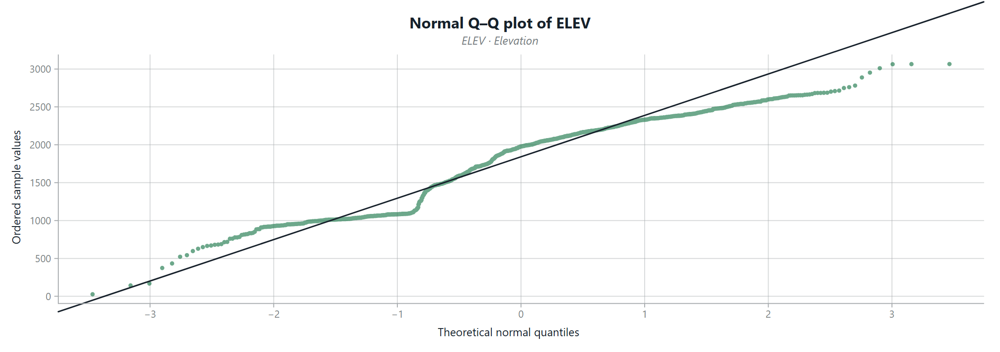
An environmental variable with two modes almost always means that the records come from two different sets of sites: two mountain systems, two subspecies, or one natural population and one cultivated. It is not a flaw in the data: it is information. In the Mexican pinyon, elevation separates the higher populations of the Sierra Madre Occidental and the Altiplano from the lower ones of the north-east and of Baja California Sur.
The app applies five tests (Shapiro-Wilk, D'Agostino-Pearson, Anderson-Darling, Jarque-Bera and Kolmogorov-Smirnov) and sums them up with a majority verdict.
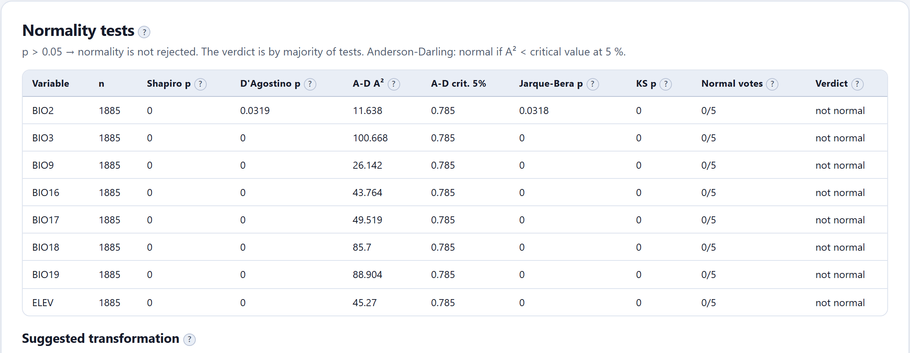
Normality tests answer the question “can I rule out that these data come from a normal distribution?”. With 50 data points a large departure is needed to rule it out; with 1,885, a tiny departure (and there always is one) is enough for the p-value to be zero. That is why the result in figure 7.5 does not say that the data are odd: it says that the sample is large.
What to do: look at the shape in the histogram and the Q–Q plot, which do tell “slightly skewed” apart from “two modes”, and remember that none of the algorithms of Block 9 requires normality. Normality matters for classical parametric tests, not for MaxEnt or a random forest.
The last table tries out transformations (log, square root, Box-Cox, Yeo-Johnson) and says whether they improve the symmetry and the p-value. It is useful when the next step is a method sensitive to shape, such as principal component analysis or a linear model.
In the example, the transformations do improve the skewness (BIO2 goes from −0.148 to −0.002 with Box-Cox), but the verdict is still “marginal”: with this much data, no transformation will get the tests to accept normality. One more reason not to become obsessed with it.
Every figure in this block has its own studio underneath, with the same philosophy as the one for maps: what you see on screen is what gets exported, and everything can be edited.
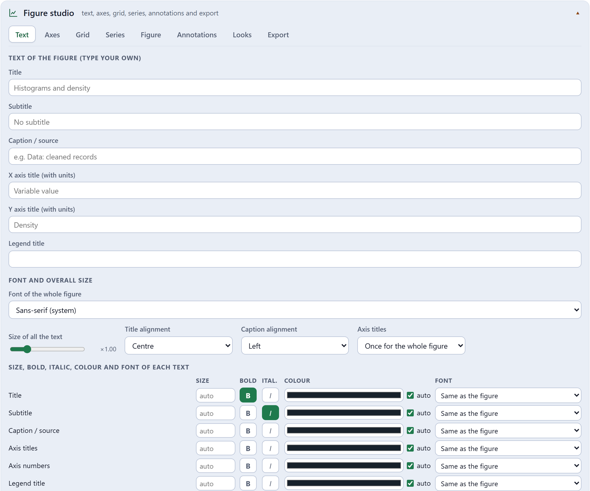
| Tab | What it controls |
|---|---|
| Text | Title, subtitle, axis titles, legend and notes, with full typography. |
| Axes | Limits, tick marks, number format, logarithmic scale, orientation of the labels. |
| Grid | Reference lines, their colour and thickness, and the frame of the figure. |
| Series | Colours, transparency, line width and point size of each series. |
| Figure | The options specific to each figure: number of histogram bins, violin width, Q–Q points… |
| Annotations | Text, arrows and lines you want to add on top of the figure. |
| Looks | Presets, and saving the style as a file to give every figure in the paper the same look. |
| Export | SVG, PNG, JPEG or WebP; screen size, A4, one or two journal columns, or slide; 150, 300 or 600 dpi. |
Figures 7.2, 7.3 and 7.4 are the figures exactly as the app draws them, with no retouching afterwards. Any reader can reproduce them with the data included in the program.
| What you see | What happened and what to do |
|---|---|
| “Preparing the Python engine…” takes a long time | It is the first time: Python and its libraries are being downloaded. On a slow connection it can take a couple of minutes; after that it stays in memory. |
| Every variable comes out “not normal” | With large samples that is to be expected (section 7.5). It is not a problem with your data and it does not prevent modelling. |
| A histogram with a single, very tall bar | A few extreme values stretch the axis. Look at them: they are usually the same suspicious records as in Block 5. |
| The CV comes out huge or negative | You are looking at a variable in degrees Celsius with a mean close to zero. The CV does not apply there. |
| The variable names come out in the wrong language | Change the language with the ES | EN switch in the top bar: the figures redraw themselves with the translated names. |
| I want the same figure for every variable | Save the style in the Looks tab and load it into the other figures. |
Four families of methods on the same table: ordination, clustering, range and niche metrics, and diversity. Everything that can be said about a species before fitting a distribution model.
Up to this point each variable has been examined on its own. This block looks at them together: which axes of environmental variation exist, whether the records form groups, how large the area they occupy is and how much variety there is within it. Everything is computed on the table from Block 5, with the variables chosen in Block 6, and it starts by pressing Prepare data →, which standardises each variable to mean zero and standard deviation one — essential when millimetres are mixed with degrees and metres.
With eight correlated variables, the records do not fill an eight-dimensional space: they crowd close to a surface of fewer dimensions. PCA looks for the axes of that surface — combinations of the original variables — ordered by the amount of variation they capture. The first summarises as much as a single number can; the second, as much as is left, and so on.
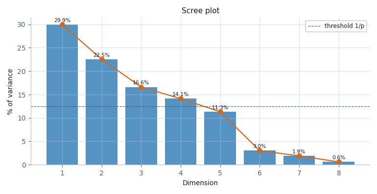
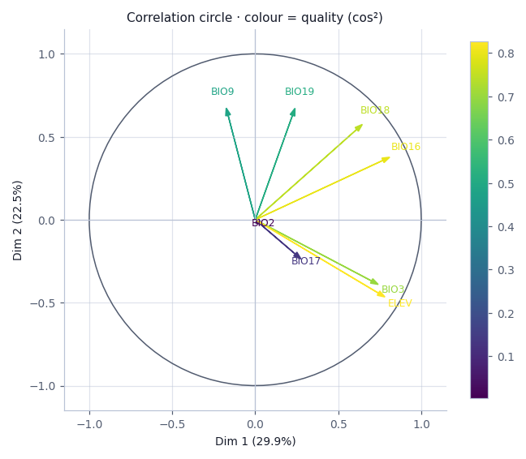
In the example, dimension 1 (29.9% of the variance) is built on BIO16 — precipitation of the wettest quarter — with a 27.4% contribution, elevation with 25.5%, isothermality with 22.9% and BIO18 with 17.4%: it is an axis of moisture and altitude. Dimension 2 (22.5%) is made up of BIO9 (25.1%) and BIO19 (25.0%), temperature and precipitation of the driest quarter: an axis of dry-season conditions. Between them they order half of the species’ environmental variation.
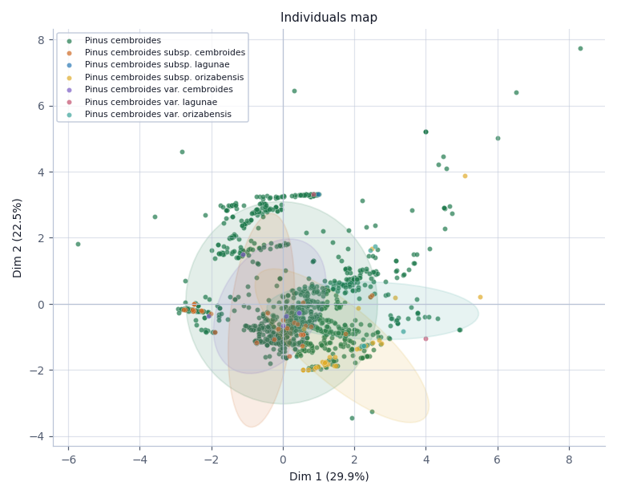
The question clustering asks is whether the records split into sets with different environments. The app answers it in three steps, and they are best taken in order.
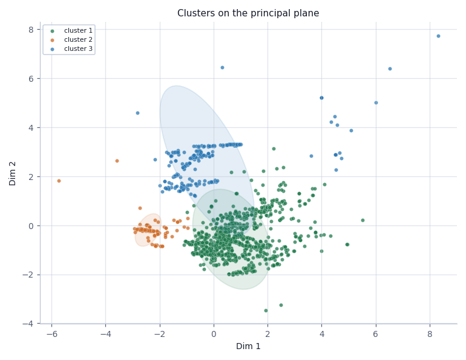
| Validation measure | How to read it |
|---|---|
| Mean silhouette | From −1 to 1. By convention: above 0.7 strong structure, 0.5 to 0.7 reasonable, 0.25 to 0.5 weak, below that no real structure. In the example it is 0.422: weak but recognisable clusters, which is the usual outcome with continuous environmental data. |
| Dunn index | The larger, the better separated. It has no accepted scale: it serves to compare partitions of the same data set, not to judge a single one. |
| Cophenetic correlation | Only for hierarchical clustering: how faithfully the dendrogram represents the original distances. Above 0.8 is considered good; in the example, 0.662. |
An environmental cluster brings together sites with a similar climate, not lineages. It may coincide with a subspecies — and then it is an interesting result — or cut right across it. Before giving a cluster a biological name, look at where it falls on the map and which taxa it contains: the app can colour the map of Block 4 by cluster.
Whereas PCA works with continuous variables, correspondence analysis works with tables of counts: taxon × Köppen climate type, taxon × state, cluster × soil class. It answers questions of the kind “which subspecies is associated with which climate?”, and draws them on a map where closeness between a row and a column means association.
With the example, the taxon × Köppen table confirms what Block 5 already suggested: the species in the broad sense is concentrated in the cold arid steppe climate, while the infrataxa of the centre-east appear associated with the temperate climates with a dry winter.
Three measures describe the area the species occupies, and all three are used in risk assessments.
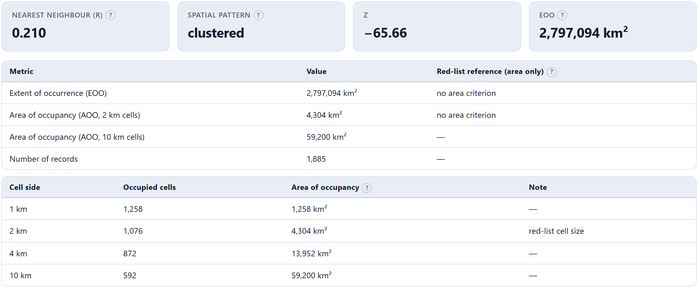
| Metric | What it is and how to read it |
|---|---|
| Extent of occurrence (EOO) | The area of the minimum convex polygon enclosing all the records. It measures geographic spread, not occupied habitat: it includes the cities, seas and deserts that lie between the populations. In the example, 2,797,094 km². |
| Area of occupancy (AOO) | The total area of the cells that contain at least one record. In the example: 1,258 km² with 1 km cells, 4,304 km² with 2 km cells (the size used by red lists), 13,952 km² with 4 km and 59,200 km² with 10 km. |
| Nearest neighbour (R) | The Clark and Evans index: 1 means a random distribution, less than 1 clustered, more than 1 regular. In the example it is 0.210 with z = −65.7: strongly clustered. |
The AOO depends on sampling as much as on the species. A well-collected species has more occupied cells than an equally widespread but poorly collected one. The red-list thresholds (AOO < 2,000 km², EOO < 20,000 km² for “vulnerable”) were designed for complete inventories, and a threshold on its own does not assign a category: the criteria also require fragmentation, decline or fluctuation.
Clustering also measures effort. An R of 0.21 says the points are tightly bunched, but part of that bunching comes from repeated collections along roads and in well-studied mountain ranges. Removing duplicates (Block 3) improves the estimate; removing the bias altogether is impossible with herbarium data.
Levins’ niche breadth measures, variable by variable, whether the species uses a narrow or a wide range of conditions relative to what is available; its standardised version runs from 0 to 1 and allows variables to be compared with one another. Overlap — Schoener’s D and Hellinger’s I, also from 0 to 1 — compares the niches of two taxa or two clusters: how much of the environmental space they share.
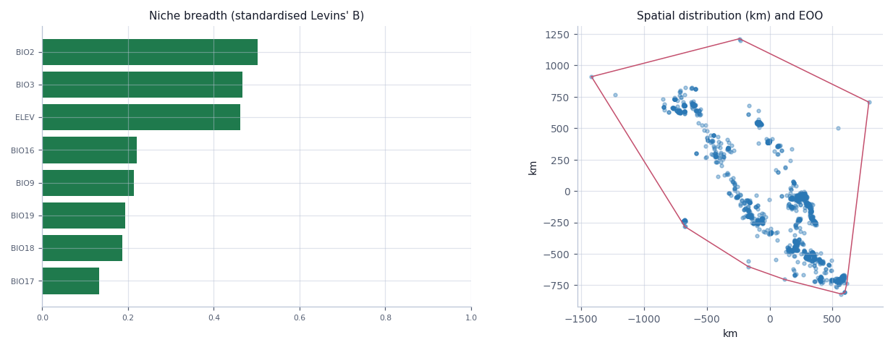
The last section applies the classic toolkit of community diversity — Shannon, Simpson, Hill numbers, rarefaction, beta diversity — to the table of records, taking as “sites” the cells of a grid, elevation bands, states or the clusters from the clustering.
In a collection of presence records, the number of records of a taxon measures sampling effort, not abundance. A species with 800 records is not more abundant than one with 80: it may be better collected, more conspicuous or live beside a road. Diversity indices were designed for communities sampled with comparable effort, and here they are applied to data that do not meet that assumption.
They are useful on two conditions: that you compare sites with similar effort — or use rarefaction to even it out — and that you state in the text what you are measuring. With the example data, what is being measured is the diversity of infrataxa of the Mexican pinyon, not that of a plant community.
With grid cells as sites, the example gives 31 sites × 7 taxa and 1,867 records. The observed richness of the whole set is 7, the Chao1 estimate is also 7.0 and the sample coverage is 99.95%: practically everything there was to collect has been collected, which was to be expected because the “taxa” are the described infrataxa of a single species.
The Shannon index of the whole set is 0.231 and the Simpson index (1 − D) 0.083: very low values, because one taxon — the species in the strict sense, with 2,281 of the original records — dominates completely. In a real plant community those numbers would point to a problem; here they describe the situation exactly.
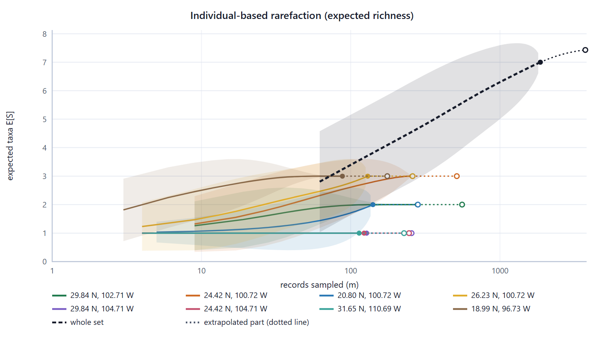
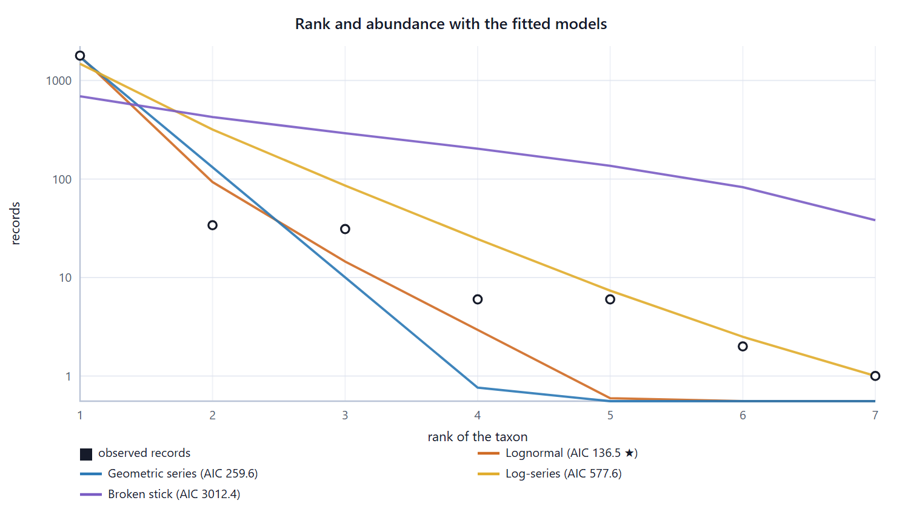
The app also computes beta diversity between sites — Jaccard, Sørensen, Bray–Curtis and Morisita–Horn — with its partition into turnover and nestedness, and orders the sites by composition with PCoA and NMDS. Every table and figure can be downloaded as CSV and as an image.
| What you see | What happened and what to do |
|---|---|
| “First press "Prepare data" above.” | The methods in this block need the standardised matrix. Press Prepare data → at the very top. |
| The PCA does not separate anything | If the first two axes hold little variance, the variables are not strongly correlated: that is a result, not an error. Look at more dimensions in the eigenvalue table. |
| The silhouette is low for every k | The data are a continuum, not clusters. This is common with climatic variables. Report the silhouette and do not force a partition. |
| The AOO changes enormously with the cell size | That is expected and must be stated: always report the cell size alongside the number, and use 2 km if you are going to compare with red-list criteria. |
| Shannon comes out almost zero | One taxon dominates. With records of a single species and its infrataxa, that is normal. |
| The rarefaction curve of a site is a flat line | That site has a single taxon: there is nothing to rarefy. |
Ten algorithms and an ensemble, spatial block validation, thresholds, variable importance, response curves, maps, and projection to future climate scenarios with their extrapolation map.
A distribution model learns to tell the environment of the sites where the species was recorded from the environment available in the region, and then applies what it has learnt to every cell of the map. The result is a continuous surface of suitability: how similar the climate of each cell is to that of the occupied sites.
The key word is available. Since there are no true absences (section 1.1), the contrast is made against a sample of the environment of the whole study area, the background points. That is why the area you choose determines what the species is compared against, and why Block 2 mattered so much.
The Prepare model data → button does four things and reports on them:
With the Mexican pinyon and the WorldClim layers at 10 arc-minutes: extent Country of the records (MX), box from −118.6° to −86.4° and from 14.4° to 32.8°, a grid of 194 × 111 cells of 18.6 km, 8 predictors. Of the 1,885 cleaned records, 14 fall outside the extent —those from the United States above the 32.8° parallel— and of the remaining 1,871, 1,468 fall in a cell that is already occupied or has no data: that leaves 403 presences against 7,751 background points.
Seeing 1,871 records turn into 403 presences is alarming the first time. No data have been lost: the repetition has been removed. With 18.6 km cells, 403 is the number of distinct cells where the species has been recorded, and that is what the model can learn from.
| Algorithm | What it does and when it is a good choice |
|---|---|
| MaxEnt-style | Penalised (L1) logistic regression on linear, quadratic, product and hinge terms, with cloglog output. It is equivalent to maximum entropy modelling and is the sensible starting point in almost any study. |
| GLM | Generalised linear model with linear and quadratic terms. Transparent, interpretable, and the most sensitive to collinearity. |
| GAM | Generalised additive model with splines: smooth curves without imposing their shape. |
| Random forest | Many trees with balanced subsampling. Flexible and robust; its validation uses out-of-bag predictions so as not to inflate the fit. |
| Boosted trees (BRT) | Trees added one at a time, each correcting the error of the previous ones. Very accurate, and the most prone to overfitting. |
| Support vector machine | Non-linear boundary with a radial kernel. |
| Neural network | Five small networks, averaged. |
| Bioclim | The classic climatic envelope: percentiles of each variable. Simple and useful with very few presences. |
| Domain | Gower distance to the most similar record. |
| Mahalanobis | Distance to the environmental centroid, taking the covariance into account. |
If the records are split at random, the test points end up a few kilometres from the training points: the model gets them right because they are on the same hill, not because it has learnt anything general. The result is a high and misleading AUC. Spatial block validation divides the area into blocks and leaves out whole blocks, so the model has to predict in areas it has not seen. The values drop, and that is as it should be.
| Metric | What it measures and how to read it |
|---|---|
| AUC | The probability that a presence site receives a higher suitability than a background site drawn at random. 0.5 is chance. Usual reading bands: 0.7–0.8 acceptable, 0.8–0.9 good, above 0.9 excellent. They are conventions, and with presence-only data the AUC depends on the study area: values are not compared across different studies. |
| TSS | Sensitivity + specificity − 1, at the threshold that maximises it. From −1 to 1; by convention, above 0.6 is considered good. It is more stable than kappa and does not depend on prevalence. |
| Boyce index | Measures whether the higher suitability classes contain proportionally more presences: it is the metric designed for presence-only data. It ranges from −1 to 1; above 0.8 indicates a very consistent model. |
| Omission (P10) | The fraction of test presences that falls below the 10th-percentile threshold. Ideally close to 0.1. |
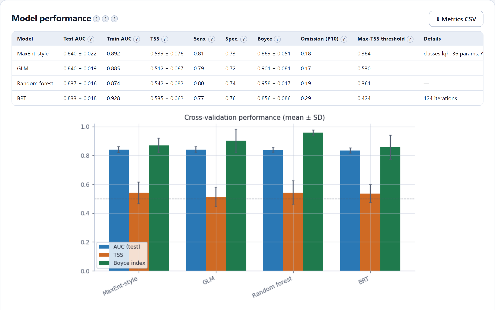
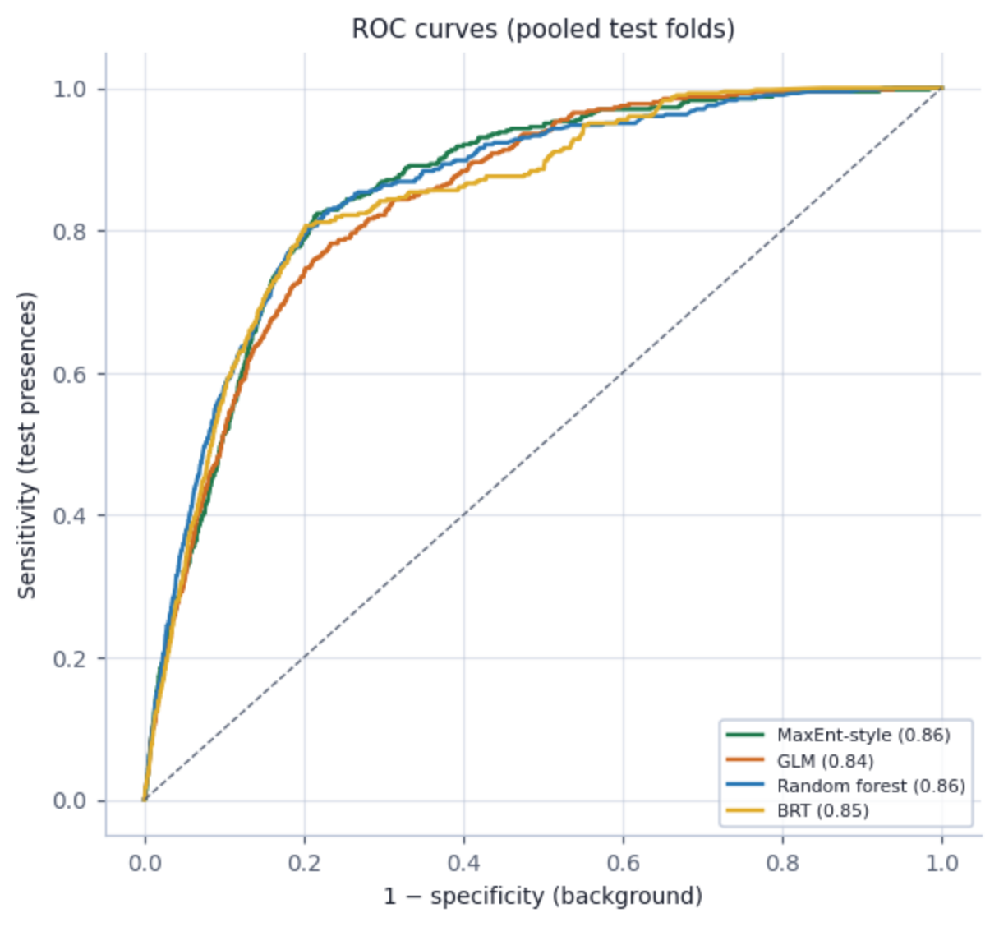
Two different questions: how much each variable contributes, and how the species responds to it.
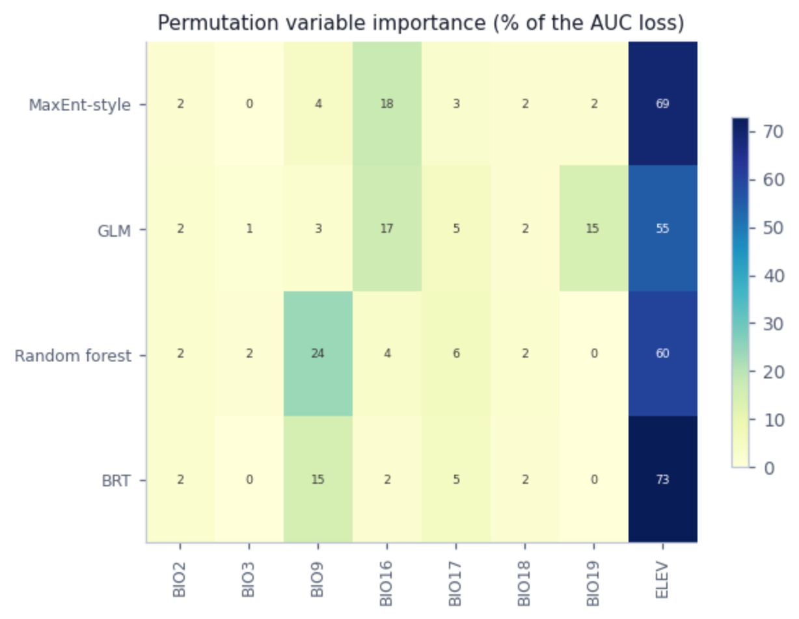
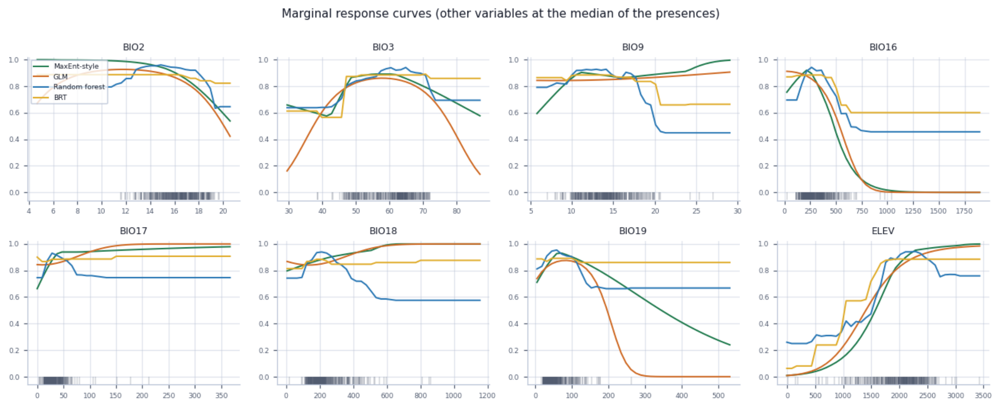
That elevation comes out as the most important variable in all four models does not mean that elevation itself causes the distribution: it may be a variable that travels with the true cause —the cold, the moisture of the mountains, the soil, history—. And if two variables are correlated, the model shares the importance between them arbitrarily; that is why Block 6 comes before this one.
The app draws three maps per model: the continuous suitability, the presence/absence map after applying a threshold, and the uncertainty between models when there are several.
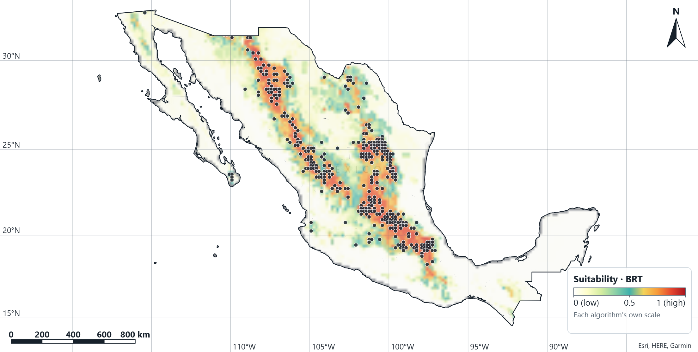
| Threshold | What it does |
|---|---|
| Max. TSS (sens + spec) | The one that maximises sensitivity + specificity. It is the most commonly used and the one the app proposes. |
| 10th percentile of presences | The P10 threshold leaves out the 10% of presences with the lowest suitability. Useful when you suspect some records are poorly georeferenced. |
| Minimum training presence | Keeps every presence. The most permissive, and the most sensitive to a single error. |
| Sensitivity = specificity | Balances the two kinds of error. |
With the threshold applied, the app computes the suitable area in square kilometres: in the example, the MaxEnt-style model with the maximum-TSS threshold (0.384) marks 471,566 km² of Mexican territory with a climate suitable for the pinyon. That figure changes with the threshold, so you must report which one you used.
When several algorithms agree, their average usually predicts better than any of them on its own, and their disagreement is an honest measure of uncertainty. The ensemble combines the models by weighted mean, median or committee average (votes), and weights them by test AUC, TSS, Boyce or equally. Next to the averaged map, the app draws the agreement map: where the models say the same thing and where they do not.
The last section applies the fitted model to future climate layers. Scenarios are added to a list —each with its climate model, its pathway and its period— and they are all projected in one go.
| What it delivers | What it is for |
|---|---|
| Map per scenario | The future suitability, with the same threshold as the present. |
| Gain and loss | How much area is gained, how much is lost and how much is kept, in km² and as a percentage. |
| Shift of the suitable area | How far the centre of the distribution moves, in which direction, and how much it climbs in elevation. |
| Dispersal assumptions | Unlimited, none, or limited to a distance: three different answers to “will it be able to get there?”. |
| Refugia | The areas that are suitable today and in every future scenario: the first thing to conserve. |
| Ensemble across scenarios | Mean and agreement between climate models, which is where the greatest uncertainty lies. |
The MESS map marks the cells where the future climate falls outside the range the model saw during training. There the prediction is not an estimate: it is the formula extended blindly. The app hatches those areas on the future maps and lets you export the MESS separately. Without that layer, a suitability map for 2070 promises a precision it does not have.
| What you see | What happened and what to do |
|---|---|
| The map does not cover the whole country | The grid was prepared with a different extent. Change the extent and press Prepare model data → again: the app warns you when the prepared grid no longer matches the chosen extent. |
| An AUC of 0.99 | Be suspicious before celebrating: it usually comes from random validation instead of blocks, from a huge study area, or from duplicated presences. |
| Very few presences after preparing, or a model that takes too long | The first is the per-cell thinning: if it leaves you below fifteen presences, use higher-resolution layers or enlarge the area. The second is normal for the random forest and the boosted trees, the most expensive: start with MaxEnt and GLM. |
| There are suitable areas with no records | It may be an interesting prediction —unexplored habitat— or extrapolation: check it against the MESS and against what you know about the species. |
| The future map is almost all suitable | Check that the future layers have the same resolution and the same variables as those of the present, and look at the MESS. |
The same climate data, read with the questions of agronomy: degree days, frost, chilling hours, water balance and length of the growing period, and with them the suitability of a crop, its planting calendar and the factor that limits it in each cell.
The nine previous blocks are about your species. This one is not. Block 10 takes the same territory and the same climate and answers a different question: which crops could grow here? If you are studying a pine and maize appears, it is not a mistake: maize is simply the first crop in the catalogue. Choose the one you are interested in —there are more than sixty— or enter the requirements of your own.
The two natural uses of this block are to assess the agricultural potential of the region you have already loaded, and to compare the niche of a wild species with the suitability of a related crop.
The agroclimatic indices are computed month by month: they need minimum temperature, maximum temperature and precipitation for the twelve months —36 WorldClim files, or twelve-band files—. They are loaded as in Block 5: by folder or by files.
The 🌡 Use the layers of step 5 button reconstructs an approximate monthly cycle from the bioclimatic layers you have already loaded —mean temperature and extremes, seasonality, annual and quarterly rainfall— and computes a reduced set of indices with it. The app flags those indices as approximate and explains the assumption: the thermal peak is placed in July in the northern hemisphere. It is useful for exploring and for learning; for a technical report, load real monthly layers.
Once the grid has been read, Compute the indices → produces 21 layers. These are the most widely used:
| Index | What it measures and what it is for |
|---|---|
| Growing degree days (GDD) | The sum of the heat available above a base temperature. It is the currency used to judge whether a crop cycle “fits” at a site. It has no universal scale: each cultivar has its own requirement. |
| Frost days and months | How often the minimum drops below 0 °C. It determines which crops are impossible without protection. |
| Frost-free period | The consecutive days without frost: the real planting window in temperate areas. |
| Chilling hours | Hours accumulated in the cold range of winter. Deciduous fruit trees need them to break bud; the requirement depends on the cultivar, so the figures are indicative. |
| Heat days | Days above critical thresholds, which in many crops coincide with flowering. |
| Reference evapotranspiration | How much water the atmosphere can evaporate. Together with rainfall it gives the water balance. |
| Water deficit and surplus | How much water is lacking or left over, month by month: the basis of any irrigation plan. |
| Length of the growing period | The days on which there is enough temperature and moisture at the same time. It is the index that best sums up the general agricultural suitability of an area. |
| Aridity index and class | The ratio between rainfall and evapotranspiration, with the classes of the United Nations Environment Programme (hyper-arid, arid, semi-arid, dry sub-humid, humid). |
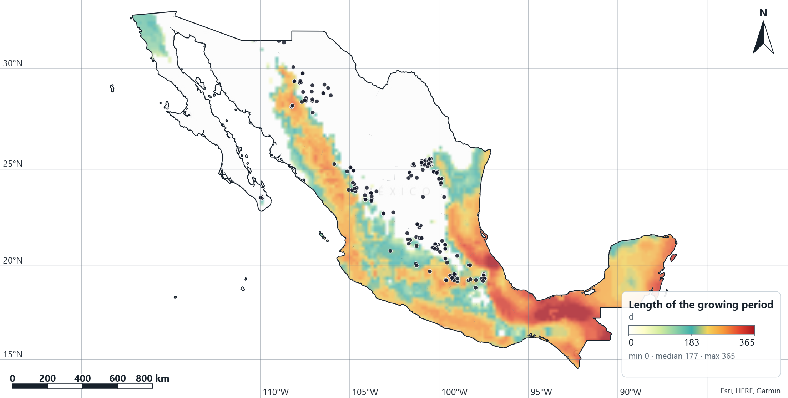
The suitability model is an envelope: for each cell and for each possible planting month, it compares what the crop needs —optimum temperature and lethal limits, water, chilling hours, elevation— with what the site offers over the whole cycle, and keeps the best month.
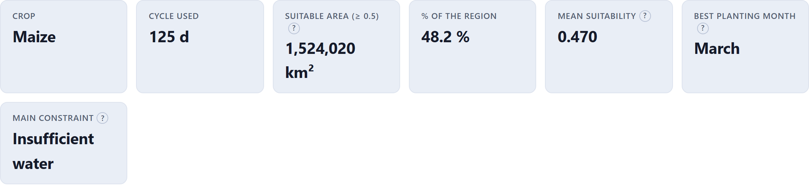
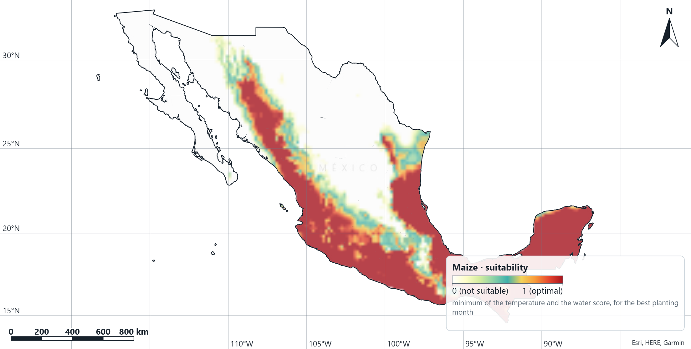
A 125-day cycle, 1,524,020 km² with suitability ≥ 0.5 —48.2% of the region—, a mean suitability of 0.470, best planting month March and main constraint insufficient water. These figures were computed with the reconstructed monthly cycle, so they are good as an exercise, not as a technical recommendation: with real monthly layers they would change, and the optimum month also depends on the cultivar and on management.
Knowing that a cell has a suitability of 0.3 does not tell you what to do; knowing why does. The limiting factor map paints, in each cell, which of the conditions restricts the crop most in its best planting month.
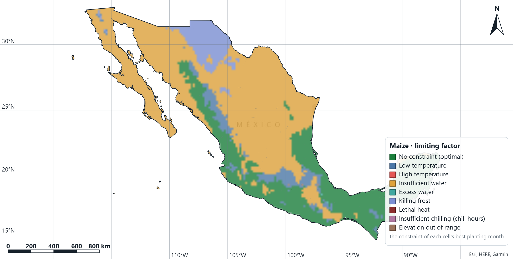
The app comes with a catalogue of more than sixty crops with their reference ranges: minimum, optimum and maximum temperature, lethal limits, cycle length, water and chilling-hour requirements, and elevation range. Everything can be edited: you can change the values of a crop, save the catalogue as a file and load it again in another session or on another computer.
They are published ranges for the species as a whole, not for a particular cultivar. A highland landrace of maize and a commercial hybrid for the lowland tropics have different requirements, and the catalogue cannot know which one you use. Before making a real decision, replace the values with those of your own material: that is why the catalogue can be edited, and the app exports the parameters it used together with the results.
With monthly layers of a future scenario, the block repeats the whole calculation and delivers the difference: how much each index changes, how much suitable area is gained or lost, how the planting calendar shifts and which factor becomes limiting. It is the question that matters most to whoever plans: not “what will the climate be like?” but “what will I have to change?”.
The same warnings as in chapter 9 apply: scenarios are projections with uncertainty, it is advisable to use more than one climate model, and you should look at where the future climate leaves the known range.
| What you see | What happened and what to do |
|---|---|
| Maize appears even though you are studying another species | It is the first crop in the catalogue, not a prediction about your species (section 10.1). Choose another one from the list. |
| The indices are flagged as “approximate” | They were derived from the bioclimatic layers because there are no monthly layers. For a technical report, load the 36 monthly layers. |
| The map does not cover the whole country | As in Block 9: check the chosen extent and read the climate grid again. The app says which box it used. |
| The chilling hours come out as zero over the whole map | With the reconstructed monthly cycle, chilling hours are the most fragile index. They need real monthly layers. |
| The suitable area changes a lot when a parameter is touched | That is to be expected in an envelope model: the result is only as good as the ranges in the catalogue. Document the ones you used. |
| Soil pH is reported but not applied | The app warns you about it: there is no pH layer, so that requirement is left out of the calculation. |
What you look up rather than read: which files the app recognises and how they must be named, the formulas with their sources, the English–Spanish glossary, the error messages with their causes, the bibliography and the third-party components.
The app does not convert files or upload them to any server: it reads them on your computer. This is the complete list of what it recognises and of how each thing has to be named.
| Aspect | What it accepts |
|---|---|
| Format | .csv, .txt (separated by commas, semicolons or tabs), .xlsx, or text pasted from a spreadsheet. |
| Minimum columns | Species, longitude and latitude. Headers are recognised in Spanish and in English (especie/species, longitud/lon/longitude, latitud/lat/latitude) and, if they do not match, they are assigned by hand with the three menus. |
| Optional columns | Country, state, locality, year, month, elevation and uncertainty in metres. They are recognised automatically and used in the filters of Block 2. |
| Coordinates | Decimal degrees with a point or a comma; degrees-minutes-seconds with symbols or with compass letters. Two checkboxes fix in one go swapped longitude and latitude and a missing minus sign. |
| Encoding | UTF-8 and the old Windows encoding: accents are repaired on reading. |
| Layer | Expected file name and notes |
|---|---|
| Bioclimatic | wc2.1_<res>_bio_1.tif … bio_19.tif, where <res> is 30s, 2.5m, 5m or 10m. GeoTIFF in geographic coordinates (EPSG:4326). |
| Elevation | wc2.1_<res>_elev.tif |
| Köppen-Geiger | A categorical GeoTIFF with the class codes; the table of names is included in the app. |
| Monthly | wc2.1_<res>_tmin_01.tif … _12.tif, and the same for tmax and prec: 36 files. A twelve-band file per variable is also accepted. |
| Future scenarios | A 19-band file with the bioclimatic variables of the scenario, or separate bio_N layers. They must have the same resolution and extent as those of the present. |
| Your own regions | GeoJSON of polygons in EPSG:4326, with a recognisable name in the properties of each polygon. |
| Type | Formats |
|---|---|
| Tables | CSV in every block: raw and cleaned records, points × variables, metrics, coefficients, agroclimatic indices, diversity. |
| Points | Cleaned GeoJSON. |
| Maps | PNG, JPEG, WebP, TIFF, georeferenced GeoTIFF and SVG; paper sizes at 150, 300 or 600 dpi. |
| Surfaces | GeoTIFF (Float32, EPSG:4326) and ASCII grid (.asc) of the suitability and of each agroclimatic index. |
| Figures | Vector SVG, PNG, JPEG and WebP from the figure studio. |
The same ones shown in the help cards of the app, with the source they come from. The symbols follow the notation of each original source.
| Pearson correlation | r = Σ(x−x̄)(y−ȳ) / √[Σ(x−x̄)² · Σ(y−ȳ)²] |
| Coefficient of determination | r² = r × r |
| Variance inflation factor | VIF_j = 1 / (1 − R²_j) |
| Standard deviation | SD = √[ Σ(x − x̄)² / (n − 1) ] |
| Coefficient of variation | CV % = 100 × SD / |mean| |
| Contribution to the dimension | reference = 100 / (number of variables) |
| Inertia (correspondence analysis) | total inertia = χ² / n |
| Nearest neighbour | R = mean observed distance / mean distance expected at random |
| Levins niche breadth | B = 1 / Σp² ; standardised B = (B − 1) / (classes − 1) |
| Schoener overlap | D = 1 − ½ Σ |p_A,i − p_B,i| |
| Shannon | H′ = − Σ p_i · ln(p_i) |
| Simpson | D = Σ p_i² |
| Pielou evenness | J′ = H′ / log(S) |
| Berger–Parker dominance | d = N_max / N |
| Margalef and Menhinick richness | D_Mg = (S − 1) / ln(N) ; D_Mn = S / √N |
| Chao1 | Chao1 = S + f₁² / (2·f₂) |
| TSS | TSS = sensitivity + specificity − 1 |
| Omission | omission = presences below the threshold / test presences |
| Growing degree days | GDD = Σ max(0, (T_max + T_min)/2 − T_base) |
| Reference evapotranspiration | ET₀ = 0.0023 · R_a · (T_mean + 17.8) · √(T_max − T_min) |
| Aridity index | AI = annual precipitation / annual ET₀ |
Besides the formula, each help card in the app gives the reading scale, the most common mistake and the full reference. There are 97 cards spread across Blocks 6 to 10.
The terms of the interface and the concepts of the manual, with their Spanish equivalent for anyone who reads the Spanish literature or uses the app in Spanish.
| English | Spanish | What it is |
|---|---|---|
| Occurrence record | registro de presencia | The statement that an organism was at a place at a given time. |
| Presence-only | solo presencia | Data without confirmed absences; the contrast is made against the available environment. |
| Background points | puntos de fondo | A sample of the environment available in the study area. |
| Accessible area (M) | área accesible | The part of the world the species has been able to reach. |
| Suitability | idoneidad | Environmental similarity to the occupied sites, from 0 to 1. |
| Threshold | umbral | The value that turns suitability into presence or absence. |
| Spatial blocks | bloques espaciales | Validation that leaves out whole regions, not single points. |
| Extrapolation | extrapolación | Predicting under conditions the model did not see; it is flagged with the MESS. |
| Response curve | curva de respuesta | How suitability changes as one variable varies. |
| Permutation importance | importancia por permutación | The drop in performance when a variable is shuffled. |
| Ensemble | ensamble | A combination of several models. |
| Collinearity | colinealidad | Variables that predict one another. |
| Spatial thinning | adelgazado espacial | Keeping one presence per cell. |
| Extent of occurrence (EOO) | extensión de la presencia | The area of the convex polygon enclosing the records. |
| Area of occupancy (AOO) | área de ocupación | The summed area of the occupied cells. |
| Niche breadth | amplitud de nicho | How wide the range of conditions used by the species is. |
| Niche overlap | solapamiento de nicho | How much of the environmental space two taxa share. |
| Rarefaction | rarefacción | Expected richness at equal sampling effort. |
| Beta diversity | diversidad beta | The difference in composition between sites. |
| Growing degree days | grados-día | Heat accumulated above a base temperature. |
| Chilling hours | horas frío | The accumulated winter cold that deciduous fruit trees need. |
| Length of growing period | periodo de crecimiento | Days with enough temperature and moisture. |
| Limiting factor | factor limitante | The condition that most restricts the crop in each cell. |
| Climatic analogues | análogos climáticos | Sites with a climate similar to that of a reference site. |
The warnings the app can show, with their cause and their remedy. Each chapter also has its own table of common problems.
| Message | What it means and what to do |
|---|---|
| “Could not query GBIF” | No connection, or the service is down. Use the bundled example or your own files and try again later. |
| “the connection to GBIF was lost” | The download broke off after six attempts. The app offers to use the records that did arrive. |
| “GBIF answered 429 / 503” | Too many requests, or the service is overloaded. The app waits and retries by itself; if it keeps happening, try again in a few minutes. |
| “Extract the raster values first” | Block 6 needs the points × variables table from Block 5. |
| “none recognised as WorldClim or Köppen” | The file names do not follow the pattern of appendix A.2. |
| “The prepared grid uses the extent…” | An informative notice: it says which box the model was prepared with. If you changed the extent afterwards, prepare again. |
| “N of M records fall outside the extent” | Those records fall outside the chosen box and do not enter the model. It is your decision, not an error. |
| “Few presences (<15)” | The model will be unstable. Enlarge the area, use higher-resolution layers or switch to an envelope method. |
| “No monthly layers: the indices will be derived from … bioclimatic layers” | There are no monthly layers: the agroclimatic indices come from a reconstructed cycle and are flagged as approximate. |
| “The pH range … is reported but not applied” | There is no soil-pH layer, so that requirement of the crop is left out of the calculation. |
| “Error reading the GeoTIFF files” | A damaged file, or one in a projection other than EPSG:4326. |
| “Preparing the Python engine…” takes a while | It is the first time in the session: Python is being downloaded into the browser. After that it stays in memory. |
The bibliography of the methods the program uses. It is the same list that appears on the home page of the app, where each method links to its reference.
Besides these, the help cards of the app cite the sources of each diversity index, each normality test and each clustering method: 86 different references in all, each one next to the number it explains.
All the analysis, figures and maps of BioModelling Pro are original code, licensed under the GPL v3 or later. What comes from outside is listed here, each item with its licence; the full breakdown is in NOTICE.md and the complete licence texts in vendor/THIRD-PARTY-NOTICES.txt.
| Component | What it is for and under which licence |
|---|---|
| Leaflet | The interactive maps. 2-clause BSD licence. |
| geotiff.js | Windowed reading of GeoTIFF files. MIT licence. |
| html2canvas | Composing the image when a map is exported. MIT licence. |
| Pyodide | The Python engine inside the browser, with NumPy, SciPy, pandas, scikit-learn, statsmodels and Matplotlib. MPL-2.0 licence and those of each package. |
| Natural Earth | The boundaries of the 32 states of Mexico (1:10 million scale). Public domain. |
| Map tiles | Base maps from several providers, used under their terms and with their attribution on the map. |
| Typefaces | Cormorant, Crimson Pro and Jost, under the SIL Open Font License 1.1 (in this manual only). |
| Source | What it is and on what terms |
|---|---|
| GBIF | The example records (2,400 of Pinus cembroides, downloaded on 21 September 2026). Each record keeps the licence of the institution that published it: CC0, CC BY or CC BY-NC. The 70 institutions and the 91 datasets are listed in datos/GBIF-FUENTES.md. |
| WorldClim 2.1 | The bioclimatic variables and elevation. Free for academic and non-commercial use, but they may not be redistributed without prior permission. Since version 1.1.0 the program carries no WorldClim layer at all, not even the clip the example used to bring: they are downloaded once, following the instructions in datos/LEE-ME.md. |
| Köppen-Geiger | The 1 km map of climate classes by Beck et al. (2018). CC BY 4.0: it can be redistributed with a citation, and that is why it does travel with the program. |
| SoilGrids (ISRIC) | The soil type of Block 5, queried online point by point. CC BY 4.0. |
A result rests on three things, and all three are cited: the program, the data you worked with and the method you applied. If you download your records from gbif.org instead of from the app, GBIF gives you a download DOI that identifies exactly that dataset: use it. The full breakdown of what is original and what comes from others is in NOTICE.md.